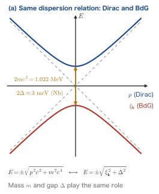

Chapter 1Particle Physics for Materials Scientists — Why Study It?
To a materials scientist, particle physics may look like the most remote field imaginable. On our side, electrons with energies of a few eV move through a crystal at room temperature; on theirs, protons of 7 trillion eV are smashed head-on into each other (a center-of-mass energy of 13.6 trillion eV). The gap in energy is 13 orders of magnitude. It is natural to conclude that the two cannot possibly be related.
Yet the motivation for writing this book is precisely the conviction that this intuition is wrong. The hole in a semiconductor is a particle defined by the same logic of subtraction that Dirac used when he introduced the antiparticle. Superconductivity is the spontaneous breaking of a (global) U(1) symmetry, and it was by looking at it that Yoichiro Nambu conceived of mass generation through spontaneous symmetry breaking. Anderson, Higgs, and others developed this into the generation of mass for gauge fields, which is the Higgs mechanism. The Majorana particle is now being searched for in particle-physics experiments as the true identity of the neutrino, while at the same time people are trying to build it into the edges of topological superconductors as an element for quantum computation. And what determines the rate at which damage accumulates in the first-wall material of a fusion reactor (the dpa rate and the He production rate) is the nuclear reaction cross section, which is itself a quantity of particle and nuclear physics.
In short, particle physics and materials science “use the same tools at different energy scales.” The tools are quantum field theory, symmetry breaking, scattering cross sections, and Feynman diagrams. Most of the tools you have mastered on one side work unchanged on the other. If you keep in mind what does differ (Lorentz invariance, many-body effects, the scale), you do not need to learn everything from scratch a second time.
In this chapter we show this claim not by analogy but by equations. For example, dielectric breakdown of the vacuum (the Schwinger effect) and Zener breakdown in a semiconductor can both be written as
$$ \Gamma \;\propto\; \exp\!\left(-\pi \frac{F_{\mathrm{c}}}{F}\right) $$that is, in the same form, and the only difference is whether the critical electric field $F_{\mathrm{c}}$ is $1.32\times10^{18}\ \mathrm{V/m}$ (vacuum) or $3.5\times10^{8}\ \mathrm{V/m}$ (Si). We line up several such “same equations” in this chapter. We expect that they will give the reader a motivation to read the remaining 15 chapters.
- Five reasons why materials scientists should study particle physics, and an overview of the whole book
- A map of energy scales from phonons at $10^{-3}\ \mathrm{eV}$ to the LHC at $10^{13}\ \mathrm{eV}$, and the keV–MeV region where the two fields actually meet
- That the Dirac sea and the valence band of a semiconductor are the same picture, and the correspondence between holes and positrons together with the differences
- That Schwinger pair production and Zener breakdown are written with the same exponential function
- That superconductivity is the spontaneous breaking of a (global) U(1) symmetry; that the Meissner effect, within the range of the static transverse response, has the same content as “the photon having a mass”; and that the London penetration depth $=$ the reduced Compton wavelength of the photon
- That the Bogoliubov–de Gennes equation has the same form as the Dirac equation, and that the superconducting gap $\Delta$ plays the role of the mass $m$
- The meaning of the Majorana condition $\gamma=\gamma^\dagger$, and the Majorana zero modes that appear at the edges of topological superconductors
- The kinematics of the DT fusion reaction, the production of 14 MeV neutrons, and an estimate of displacement damage (dpa) in the first wall
- Methods that use elementary particles as “yardsticks” for materials ($\mu$SR, positron annihilation, neutron scattering, Compton scattering) and their numerical values
- The conventions of natural units $\hbar=c=1$, how to use $\hbar c = 197.327\ \mathrm{MeV\,fm}$, and conversions between barns and GeV$^{-2}$
1.1 The Misconception That “Elementary Particles Have Nothing to Do with Materials”
1.1.1 Five reasons
Let us state the claim of this book first. There are five reasons why a materials scientist should study particle physics. They are arranged in order, from the most abstract to the most practical.
Reason 1: You do not have to learn the same equation twice
The Dirac equation, the Bogoliubov–de Gennes equation, the Kane model from $k\cdot p$ perturbation theory, and the two-dimensional massless Dirac equation of graphene—all of these share the same algebraic structure, a linear combination of anticommuting matrices, and when linearized at low energy they reduce to first-order differential equations of the same form (even if quadratic terms remain in the original expressions, as with $\xi_\kk$ in BdG or the $k^2$ term in the Kane model).
$$ \left(\ii\gamma^\mu\partial_\mu - m\right)\psi = 0 $$If you understand this single equation thoroughly in Chapter 9, you can treat the Dirac cone of graphene, the surface states of topological insulators, and the quasiparticles of superconductors with the same tool. In condensed matter textbooks these are introduced in separate chapters with separate notation, so it is hard to notice that they are the same thing.
Reason 2: The common language of symmetry breaking passed from condensed matter to particle physics, and has come back again
The concept of spontaneous symmetry breaking was born on the condensed-matter side, in Landau’s theory of phase transitions and in BCS theory. In 1960, Yoichiro Nambu recognized the existence of a collective mode that restores the gauge invariance of the BCS state (a massless phase mode if the Coulomb interaction is switched off), and transferred this to particle physics, proposing a mechanism by which the nucleon acquires its mass through spontaneous breaking of chiral symmetry, together with the massless Nambu–Goldstone boson that appears in the process (1961). Then Anderson (1963) and Higgs and others (1964) showed that, in the presence of a gauge field, the Goldstone boson is absorbed and the gauge field itself acquires a mass (the Anderson–Higgs mechanism), which led to the discovery of the Higgs boson in 2012.
And today that language is flowing back to the condensed-matter side. Terms such as “order parameter,” “the gauge field acquires a mass,” and “topological defect” are now shared between the two fields to a considerable degree. If you know only one of them, the papers of the other are hard to read.
Reason 3: Elementary particles are “yardsticks” for measuring materials
Muons (from the decay of $\pi$ mesons produced at accelerators), positrons ($\beta^+$ decay of a $^{22}$Na source, or accelerator-based slow-positron beams), and neutrons (research reactors and spallation neutron sources) are all particles handled by particle and nuclear physics (of these, the neutron is a composite particle made of three quarks), and yet they have become standard probes for looking inside materials nondestructively. $\mu$SR can detect weak internal magnetic fields at the level of $10^{-5}\ \mathrm{T}$, and positron annihilation can detect vacancies at concentrations of about $10^{-6}$. Both provide, nondestructively, kinds of information that are hard to obtain by other methods (the local field distribution in zero magnetic field, and the volume and chemical environment of vacancies). We organize these, with numerical values, in Section 1.6.
Reason 4: The lifetime of fusion-reactor materials is determined by nuclear reaction cross sections
The 14 MeV neutrons emitted by DT nuclear fusion knock atoms of the first-wall material out of their lattice sites, and further produce helium through $(n,\alpha)$ reactions, which embrittles the grain boundaries. How much damage is introduced, and how fast, is determined by the scattering and reaction cross sections of the neutron, which are precisely quantities of nuclear and particle physics. In Section 1.5 we actually estimate $\mathrm{dpa}$ (displacements per atom).
Reason 5: The computational methods themselves are quantum field theory
The $GW$ approximation used to improve the accuracy of first-principles calculations, the Migdal–Eliashberg theory used to calculate superconducting transition temperatures, and dynamical mean-field theory (DMFT)—all of these are formulated in the language of Feynman diagrams. The rules for the diagrams themselves are derived in Chapter 8 for particle scattering, but the same rules can be used as they are for many-body problems in condensed matter (the Feynman diagrams treated in “Introduction to Linear Response Theory,” Appendix C, follow the same logic as those in Chapter 8 of this book).
1.1.2 A correspondence table of “the same tools”
We put the conclusion in a table first. Each row of Table 1.1 is shown as an equation in some chapter of this book. The rows with “Chapter 1” in the rightmost column (antiparticles and holes, the pair-production threshold, dielectric breakdown of the vacuum, spontaneous breaking of gauge symmetry, gauge-field masses, Nambu spinors, and scattering cross sections) are those we treat from here on in Sections 1.2–1.5 of this chapter.
| Common tool | In particle physics | In materials science | In this book |
|---|---|---|---|
| Dirac equation $(\ii\slashed\partial-m)\psi=0$ | Electrons, muons, quarks | Graphene, Weyl semimetals, the Kane model | Chapter 9 |
| Antiparticle (negative-energy solution) | Positron $e^+$ | Hole in a semiconductor | Chapters 1, 9 |
| Pair-production threshold | $\gamma\to e^+e^-$, $2m_ec^2=1.022$ MeV | Electron-hole pair production by light absorption, $E_g$ | Chapters 1, 10 |
| Dielectric breakdown of the vacuum | Schwinger effect, $F_{\mathrm{c}}=1.32\times10^{18}$ V/m | Zener breakdown, $F_c\sim10^{8\text{–}9}$ V/m | Chapter 1 |
| Spontaneous breaking of gauge symmetry | Higgs mechanism ($\mathrm{SU}(2)_L\times\mathrm{U}(1)_Y$), $m_W=\frac12 g v$ | BCS superconductivity (U(1)), order parameter $\Delta\ee^{\ii\varphi}$ | Chapters 1, 13 |
| Gauge-field mass | Masses of the $W,Z$ bosons | Meissner effect, London penetration depth $\lambda_L$ | Chapters 1, 13 |
| Nambu spinor and mass term | Dirac mass $m\bar\psi\psi$ | BdG gap $\Delta$ | Chapters 1, 9, 14 |
| Majorana condition $\psi^c=\psi$ | Majorana neutrino, $0\nu\beta\beta$ | Edge states of topological superconductors | Chapter 14 |
| Scattering cross section $\sigma$ | $e^+e^-\to\mu^+\mu^-$ | Neutron irradiation damage, dpa, He production | Chapters 1, 16; Appendix B |
| Feynman diagram | Scattering amplitude by perturbation theory | $GW$ approximation, Eliashberg equations | Chapter 8 |
| Renormalization group | Running of the coupling constant $\alpha_s(Q^2)$ | Critical phenomena, the Kondo effect | Chapters 11, 15 |
1.1.3 A map of energy scales
To get a feel for the distance between the two fields, let us first line up physical phenomena on a logarithmic energy axis. The horizontal axis is $\log_{10}(E/\mathrm{eV})$.
![A map of energy scales. The horizontal axis is logarithmic, running from 1 meV to 10³ TeV. The upper teal dots are energies encountered routinely in materials science (the superconducting gap of Nb, phonons, room temperature, the band gap of Si, plasmons, Cu Kα X-rays), and the lower red dots are energies of particle and nuclear physics (positron annihilation, nuclear binding energy per nucleon, DT neutrons, the π meson, the proton, W, Z, H, the LHC). The region from 1 keV to 10 MeV is shaded and marked as the region where the two fields actually meet.](figs/ch01_fig1-1.svg)
Physical Meaning: Why the same equations can be used despite a 13-orders-of-magnitude gap
Looking at Figure 1.1, there is certainly a large gap between materials science and particle physics. Why, then, can the correspondences of Table 1.1 be drawn? The answer lies in the idea of an effective theory.
Low-energy physics does not depend on the details of high-energy physics. To describe conduction electrons in a crystal we do not need the internal structure of the atomic nucleus, and to calculate the band structure of Si we do not need quarks. When we look at a system at a given scale, only the degrees of freedom that remain there and the symmetries that govern them determine the physics. And if the symmetry is the same, the equations take the same form even when the scales differ.
The low-energy excitations of graphene obey the Dirac equation because the two-sublattice structure of the honeycomb lattice provides a pseudospin degree of freedom, and $C_3$ symmetry and time-reversal symmetry protect the linear crossing at the $K$ point—not because carbon atoms are relativistic (indeed the Fermi velocity is $v_F\approx c/300$). The reason a photon acquires a mass in a superconductor and the reason $W$ acquires a mass when the Higgs field condenses are the same mechanism (the Anderson–Higgs mechanism): “when a local gauge symmetry coupled to a condensed scalar field is spontaneously broken, that gauge field acquires a mass.” The groups that are broken are not the same—U(1) in a superconductor, and $\mathrm{SU}(2)_L\times\mathrm{U}(1)_Y\to\mathrm{U}(1)_{\mathrm{em}}$ in the electroweak theory (the U(1) case is the Abelian Higgs model, which we match term by term with superconductivity in Section 13.9 of Chapter 13)—but the structure is the same. What is common is the symmetry, not the energy. This is the logic that runs through the whole book.
1.2 Electrons and Holes Are Particles and Antiparticles
We begin with the first, and probably the most direct, point of contact. The hole that every student of semiconductor physics knows is defined by the same logic as the subtraction “remove one from the filled sea” by which Dirac derived the antiparticle from hole theory in 1930–31 (historically, Peierls’s interpretation of the sign of the Hall coefficient (1929) came first, and Heisenberg (1931) made the correspondence with the Dirac hole explicit).
1.2.1 The Dirac sea
Chapter 9 derives this in detail; the Dirac equation obeyed by a free relativistic electron has energy eigenvalues of two signs for a given momentum $\pp$.
$$ \begin{equation} E_\pm(\pp) = \pm\sqrt{\pp^2c^2 + m_e^2c^4} \label{eq:1-dirac-E} \end{equation} $$This comes from the fact that when we take the square root of the relativistic relation $E^2 = \pp^2c^2+m^2c^4$, neither the positive nor the negative sign can be discarded. The negative solution cannot be discarded because the positive-energy solutions alone do not form a complete set of four components (they cannot even make a localized wave packet), and because, in the presence of interactions, transitions from positive-energy states to negative-energy states inevitably occur (for details, see Chapter 9, Section 9.4.1).
If negative-energy states exist, a positive-energy electron would emit a photon and fall into them, and would keep falling without end. This contradicts the fact that matter is stable. Dirac’s solution was bold.
Definition: Dirac sea (1930)
The vacuum is not a state of “nothing”; it is the state in which all negative-energy states are filled with electrons. By the Pauli exclusion principle, a positive-energy electron can no longer fall into them.
We call this collection of filled negative-energy states the Dirac sea.
A decisive consequence follows. If we knock one electron out of the sea, a hole is left behind. Let us measure the quantum numbers of this hole with the whole sea as the reference. Let the quantum numbers of the electron just removed from the sea be charge $-e$, energy $-\abs{E}$, momentum $\pp$, and spin $\bm{s}$. Then the quantum numbers of the hole (denoted by the subscript $h$) are obtained by subtracting “the quantum numbers of the removed electron” from “the total quantum numbers of the sea,” so that
In other words, the hole behaves like a particle with charge $+e$, positive energy, and the same mass as the electron. Dirac at first thought it might be the proton (which was awkward, since the masses differ by a factor of 1836), but in 1932 Anderson discovered in a cloud chamber a particle with a mass equal to the electron’s and a positive charge, and it was named the positron $e^+$.
1.2.2 The valence band of a semiconductor
We apply exactly the same logic to a crystal. In an intrinsic semiconductor at absolute zero, the valence band is completely occupied and the conduction band is empty. If we remove one electron from the valence band, a hole is left behind. Its quantum numbers are fixed by exactly the same subtraction as in Eq. \eqref{eq:1-hole-qn}.
Only the last one, the velocity, does not change sign. This is because the group velocity is $\vv = \hbar^{-1}\partial\varepsilon/\partial\kk$, and since both $\varepsilon$ and $\kk$ change sign, the ratio does not change. On the other hand, the effective mass tensor
$$ \left(\frac{1}{m^*}\right)_{ij} = \frac{1}{\hbar^2}\frac{\partial^2\varepsilon}{\partial k_i\partial k_j} $$is a second derivative, so its sign is reversed under $\varepsilon\to-\varepsilon$, $\kk\to-\kk$. At the top of the valence band the effective mass of the electron is negative (because the band is convex upward), and therefore the effective mass of the hole is positive. The picture of the hole is to reinterpret an “electron with negative mass” as a “positive charge with positive mass,” and this is exactly the same operation as the reinterpretation of the Dirac sea.
Connection to Materials Science: LED emission and electron-positron pair annihilation are calculated from the same QED vertex
Running the process of Figure 1.2 in reverse gives pair annihilation. On the particle-physics side it is
$$ e^+ + e^- \;\longrightarrow\; 2\gamma \qquad (\text{each photon } 511\ \mathrm{keV}) $$and on the condensed-matter side it is
$$ e^- + h^+ \;\longrightarrow\; \gamma \qquad (\hbar\omega \simeq E_g) $$This is the very emission mechanism of light-emitting diodes (LEDs) and semiconductor lasers. Once we establish the Feynman rules of quantum electrodynamics (QED) in Chapter 10, we will see that these two are calculated from diagrams with exactly the same vertex factor $\ii g_e\gamma^\mu$ (the convention of Table 10.2 in Chapter 10; the general form is $-\ii q\gamma^\mu$, and the electron charge is $q=-g_e$). However, the Feynman diagrams themselves are not the same: in vacuum, one-photon emission is kinematically forbidden, so $e^+e^-\to2\gamma$ is a second-order diagram with two vertices and one internal line, whereas $e^-h^+\to\gamma$ in a crystal needs only a first-order diagram with one vertex. Another difference is that on the condensed-matter side the electron and the hole are Bloch states in the crystal potential, and instead of the $\gamma$ matrices the interband momentum matrix element $\braket{c\kk|\bm{p}|v\kk}$ (Kane’s $P$) appears.
Note that “$e^+e^-\to$ two photons” has two photons while “$e^-h^+\to$ one photon” has one because the circumstances of momentum conservation differ. In vacuum, the total momentum of a pair at rest is zero, so it cannot decay into one photon (setting $p_1+p_2=k$, we get $(p_1+p_2)^2=s\ge(2m_ec^2)^2 > 0=k^2$, a contradiction; see the kinematics of Chapter 4 and the solution to Exercise 2.8). A crystal, on the other hand, is not a Lorentz-invariant “vacuum,” and the energy and the crystal momentum of an electron-hole pair are almost independent, so no kinematic contradiction arises even if a pair with $\kk\approx0$ carries the photon momentum $E_g/c$ (about $10^{-4}$ of the Brillouin zone). For a direct transition, one photon suffices on this basis, and for an indirect transition a phonon further supplies the momentum (Section 1.2.4).
1.2.3 The pair-production threshold and dielectric breakdown of the vacuum
The correspondence continues to an even more quantitative level. When a strong electrostatic field is applied, electron-positron pairs are produced from the vacuum. This is called the Schwinger effect (the Sauter–Schwinger effect). The exponential factor itself goes back to Sauter (1931) and Heisenberg–Euler (1936), and it was Schwinger (1951) who completed it as a field theory. The production rate per unit volume and unit time is
$$ \begin{equation} \Gamma_{\text{Schwinger}} = \frac{(eF)^2}{4\pi^3\hbar^2c}\sum_{n=1}^{\infty}\frac{1}{n^2}\exp\!\left(-n\pi\frac{F_{\mathrm{c}}}{F}\right), \qquad F_{\mathrm{c}} = \frac{m_e^2c^3}{e\hbar} \label{eq:1-schwinger} \end{equation} $$Let us calculate the critical electric field $F_{\mathrm{c}}$. This quantity has a clear meaning: it is “the electric field that gives exactly the energy $m_ec^2$ when it accelerates an electron over the reduced Compton wavelength $\bar\lambda_C \equiv \hbar/(m_ec)$.” First, $\bar\lambda_C$ comes out of a single division if we use $\hbar c = 197.327\ \mathrm{MeV\,fm}$:
$$ \bar\lambda_C = \frac{\hbar}{m_ec} = \frac{\hbar c}{m_ec^2} = \frac{197.327\ \mathrm{MeV\,fm}}{0.511\ \mathrm{MeV}} = 386\ \mathrm{fm} $$Therefore
$$ eF_{\mathrm{c}}\,\bar\lambda_C = m_ec^2 \quad\Longrightarrow\quad F_{\mathrm{c}} = \frac{m_ec^2}{e\,\bar\lambda_C} = \frac{m_e^2c^3}{e\hbar} = \frac{0.511\times10^{6}\ \mathrm{V}}{386\times10^{-15}\ \mathrm{m}} = 1.32\times10^{18}\ \mathrm{V/m} $$(we used $m_ec^2/e = 0.511\times10^6\ \mathrm{V}$).
On the other hand, the process of tunneling through the band gap of a semiconductor by an electric field is the Zener breakdown. Its production rate takes exactly the same form
$$ \begin{equation} \Gamma_{\text{Zener}} \;\propto\; \exp\!\left(-\pi\frac{F_{\mathrm{c}}^{\text{Zener}}}{F}\right) \label{eq:1-zener} \end{equation} $$Equations \eqref{eq:1-schwinger} and \eqref{eq:1-zener} have the same form, even in the content of the exponent. We show next why this is so.
Connection to Materials Science: Zener breakdown is the same formula as “dielectric breakdown of the vacuum”
This agreement is no accident. In the two-band (Kane) model, write the band dispersion as
$$ \varepsilon_\pm(\kk) = \pm\sqrt{\left(\frac{E_g}{2}\right)^2 + \hbar^2v^2\kk^2} $$This is nothing but the Dirac dispersion of Eq. \eqref{eq:1-dirac-E} with the replacements
$$ m_ec^2 \;\longrightarrow\; \frac{E_g}{2}, \qquad c \;\longrightarrow\; v \quad(\text{Kane velocity}) $$(here $v$ is the Kane velocity, and $\hbar v = P$ is the Kane parameter, that is, the momentum matrix element $\braket{s|p_x|x}$ between the valence and conduction bands multiplied by $\hbar/m_0$, a quantity with the dimension of “energy × length”). Therefore Schwinger’s result can be used as it stands, and the critical electric field is summarized in a single formula involving only the gap and the velocity. Substituting $m_ec^2\to E_{\text{gap}}/2$ and $c\to v$ into Eq. \eqref{eq:1-schwinger}, the mass becomes $m^*=E_{\text{gap}}/(2v^2)$, so that
Here $E_{\text{gap}}$ is the “total width of the gap” ($2m_ec^2=1.022\ \mathrm{MeV}$ for the vacuum, $E_g$ for a semiconductor). It is a good idea to check that inserting the vacuum values into Eq. \eqref{eq:1-Fc-unified} returns $1.32\times10^{18}\ \mathrm{V/m}$ (Exercise 1.2). The actual numbers are as follows.
| System | Gap $E_{\text{gap}}$ | Velocity $v$ | $F_{\mathrm{c}}$ [V/m] | Measured breakdown field (avalanche) [V/m] |
|---|---|---|---|---|
| Vacuum (QED) | 1.022 MeV | $c=3.00\times10^{8}$ m/s | $1.32\times10^{18}$ | not reached |
| Si | 1.12 eV | $1.38\times10^{6}$ ($c/217$) | $3.5\times10^{8}$ | $3\times10^{7}$ |
| GaAs | 1.42 eV | $1.50\times10^{6}$ ($c/200$) | $5.1\times10^{8}$ | $4\times10^{7}$ |
| Ge | 0.66 eV | $1.52\times10^{6}$ ($c/197$) | $1.1\times10^{8}$ | $1\times10^{7}$ |
| GaN | 3.4 eV | $1.48\times10^{6}$ ($c/203$) | $3.0\times10^{9}$ | $3.3\times10^{8}$ |
Note: Si and Ge are indirect-gap semiconductors, and the values obtained by substituting the minimum gap into the two-band Kane model (a model for a direct gap at the $\Gamma$ point) serve only as a guide to the order of magnitude. The actual Zener tunneling is a phonon-assisted indirect process, and both the prefactor and the exponent differ from the direct-gap case.
The velocity $v$ is about $1.5\times10^{6}\ \mathrm{m/s}$ in every semiconductor, about $1/200$ of $c$. This is a restatement of the fact that the Kane parameter $E_P=2m_0v^2$ falls roughly in the range $20$–$26\ \mathrm{eV}$ in semiconductors (the values of $E_P$ corresponding to the table are 21.7 eV for Si, 25.6 eV for GaAs, 26.3 eV for Ge, and 24.9 eV for GaN). However, the reported values of $E_P$ for GaN vary widely, and some references give $E_P\approx14$–$20\ \mathrm{eV}$ for the wurtzite type. In that case $v=1.1$–$1.3\times10^{6}\ \mathrm{m/s}$ and $F_{\mathrm{c}}=3.3$–$4.0\times10^{9}\ \mathrm{V/m}$, but the argument about the $E_g^2$ law below is unchanged. Therefore the differences in $F_{\mathrm{c}}$ in Table 1.2 are explained almost entirely by the differences in $E_g^2$.
Looking also at the measured breakdown fields, GaN’s is about 11 times that of Si, in good agreement with the $E_g^2$ law, $(3.4/1.12)^2=9.2$. However, as stated at the end of this box, this measured value is determined by avalanche (impact ionization) and is not the $F_{\mathrm{c}}$ of Zener (Schwinger-type) tunneling. That the avalanche breakdown field follows $E_g^{2\text{–}2.5}$ is a separate empirical rule, stemming from the fact that the threshold energy of impact ionization is likewise of order $E_g$ (J. L. Hudgins et al., J. Electron. Mater. 32, 511 (2003)). Thus the high breakdown voltage of wide-gap materials is supported by two mechanisms in the same direction, and the Schwinger-type formula is what quantitatively gives the upper limit at which the crystal (the vacuum) is destroyed by tunneling. This formula qualitatively explains part of the reason why wide-gap materials are chosen for power semiconductors.
The ratio of the critical fields of the vacuum and of Si is $3.8\times10^{9}$, that is, about 10 orders of magnitude. Decomposing it, we get the square of the gap ratio, $(1.022\ \mathrm{MeV}/1.12\ \mathrm{eV})^2 = 8.3\times10^{11}$, divided by the velocity ratio $c/v=217$, and the numbers check out.
Practical implication: It is an everyday phenomenon for a Zener diode to break down at about $10^{8}\ \mathrm{V/m}$, but breaking down the vacuum requires $1.32\times10^{18}\ \mathrm{V/m}$. Converted to laser intensity, this corresponds to $I=\frac12\varepsilon_0cF_{\mathrm{c}}^2 = 2.3\times10^{29}\ \mathrm{W/cm^2}$, still six orders of magnitude higher than the highest intensity available today ($\sim10^{23}\ \mathrm{W/cm^2}$). But inside a semiconductor, the same physics can be observed on a tabletop. This is one example of the idea of “using a solid as a laboratory for field theory.”
A caveat is also needed, however. The breakdown of a real semiconductor occurs not only by Zener tunneling but also by avalanche multiplication (impact ionization). The rightmost column of Table 1.2 is an order of magnitude smaller than $F_{\mathrm{c}}$ because, in an ordinary pn junction, the avalanche sets in first. Pure Zener tunneling plays the leading role in junctions with a high impurity concentration (a thin depletion layer), where fields of $\sim10^{8}\ \mathrm{V/m}$ are applied in Si, in good agreement with $F_{\mathrm{c}}$. Also, the literature often writes the same exponent in terms of the effective mass as $\pi\sqrt{m^*}E_g^{3/2}/(2\sqrt{2}\,e\hbar F)$; this is not a parabolic-band approximation but the result of the two-band Kane model itself, and substituting the band-edge mass $m^*=E_g/(2v^2)$ gives exact agreement with Eq. \eqref{eq:1-Fc-unified} (it differs by a factor $\sqrt2$ from the convention that writes it with the reduced mass $m_r=m^*/2$). Separately from this, if the WKB treatment of a triangular barrier is applied to a parabolic band, the exponent becomes $4\sqrt{2m^*}E_g^{3/2}/(3e\hbar F)$, larger by the factor $16/(3\pi)\approx1.70$. Neither affects the order-of-magnitude argument.
1.2.4 Limits of the correspondence — a hole is not a positron
So far we have stressed the strength of the correspondence, but we must also make clear the differences that must not be confused. It would put the cart before the horse to let an educational analogy intoxicate us and get the physics wrong.
Caution: Where holes and positrons differ
- A hole is a quasiparticle, not an elementary particle. A positron can be extracted singly into vacuum and can fly through empty space. A hole cannot even be defined without a crystal. A hole is “the collective motion of $10^{23}$ electrons restated in the language of a single particle,” not a particle that exists as an entity. Destroy the crystal and the hole disappears.
- The meaning of equal masses differs. The CPT theorem (Chapter 6) requires the masses of a particle and its antiparticle to be exactly equal. Experimentally, too, the electron and positron masses agree to a precision of $\abs{m_{e^+}-m_{e^-}}/m_e < 8\times10^{-9}$, and the $g$-factors agree to a precision of $\abs{g_{e^+}-g_{e^-}}/g_{\text{av}} < 2\times10^{-12}$ (PDG; see also the table of CPT tests in Chapter 6). The effective mass $m_h^*$ of a hole, on the other hand, is determined by the band structure, and there is no reason at all for it to coincide with the effective mass $m_e^*$ of an electron. In Si, $m_e^*\approx0.26\,m_0$ (conductivity effective mass) while the heavy hole has $m_{hh}^*\approx0.49\,m_0$, so they differ by nearly a factor of two. Moreover, holes come in three kinds (heavy holes, light holes, and the spin–orbit split-off band), so the mass is not fixed to a single value.
- Only the charge is exactly equal. This deserves emphasis. The charge of a hole is exactly $+e$, not approximately. If one electron of charge $-e$ is removed from a neutral crystal, the remainder has exactly $+e$ by charge conservation. The sign reversal of the Hall coefficient under hole conduction is a consequence of this exact fact.
- The strength of the interaction differs. An $e^+e^-$ pair in vacuum feels the bare Coulomb interaction, whereas an $e^-h^+$ pair in a crystal feels an interaction screened by the permittivity $\varepsilon_r$. The coupling strength is multiplied by $1/\varepsilon_r$, and the binding energy drops dramatically (see the next box).
- The uniqueness of the “vacuum” differs. The QED vacuum is Lorentz invariant and looks the same from every inertial frame. A crystal selects a particular rest frame and is not Lorentz invariant. Therefore the “Dirac-like” description in a crystal is, at best, an effective theory around small $\kk$.
Connection to Materials Science: An exciton is positronium in matter
An electron and a positron form a bound state through the Coulomb attraction. This is called positronium (Ps). Since the reduced mass is $m_e/2$, the ground-state binding energy is exactly half of the Rydberg energy of the hydrogen atom, $13.606\ \mathrm{eV}$.
$$ E_{\mathrm{Ps}} = -\frac{1}{2}\,\mathrm{Ry} = -6.803\ \mathrm{eV}, \qquad a_{\mathrm{Ps}} = 2a_0 = 0.106\ \mathrm{nm} $$An electron and a hole in a crystal do the same thing. This is the exciton. There are two main differences: (i) the reduced mass changes from $m_e/2$ to the electron–hole reduced mass $m_r=m_e^*m_h^*/(m_e^*+m_h^*)$, and (ii) the Coulomb interaction is screened by $\varepsilon_r$ (in practice, the anisotropy and nonparabolicity of the effective masses and central-cell corrections are added to these). If we mechanically make the replacements $m_e\to m_r$ and $e^2\to e^2/\varepsilon_r$ in the Rydberg formula, we obtain
(the energy depends on the square of $\varepsilon_r$ because the Rydberg is proportional to $e^4$). For Si, inserting the same values as in Chapter 7, Table 7.8, $m_r=0.123\,m_0$ and $\varepsilon_r=11.7$, gives
$$ E_X = -13.606\times\frac{0.123}{11.7^2}\ \mathrm{eV} = -12.2\ \mathrm{meV}, \qquad a_X = 0.0529\times\frac{11.7}{0.123}\ \mathrm{nm} = 5.0\ \mathrm{nm} $$The measured exciton binding energy of Si is $14.7\ \mathrm{meV}$, so both the order of magnitude and the size agree well (the remaining difference comes from the anisotropy and nonparabolicity of the valence band and from central-cell corrections). Compared with the $6.803\ \mathrm{eV}$ of positronium, the binding energy is 560 times smaller and the radius is 47 times larger. It is the same bound-state problem, merely rescaled by screening and the effective mass. The theory of bound states treated in Chapter 7 (positronium, charmonium) can be read as it stands as a theory of excitons.
1.3 Superconductivity Is the Breaking of U(1) Symmetry
Next comes the connection to spontaneous symmetry breaking, the central concept of this book. This concept was born in condensed matter physics, crossed over to particle physics, and became the backbone of the Standard Model. The person who built that bridge was Yoichiro Nambu, and the material of the bridge was the BCS theory of superconductivity.
1.3.1 What is a global U(1) symmetry?
Consider a transformation that multiplies the creation and annihilation operators of the electron by the same overall phase.
$$ \begin{equation} c^\dagger_{\kk\sigma} \;\longrightarrow\; \ee^{\ii\theta}c^\dagger_{\kk\sigma}, \qquad c_{\kk\sigma} \;\longrightarrow\; \ee^{-\ii\theta}c_{\kk\sigma} \label{eq:1-u1} \end{equation} $$This is called a global U(1) transformation. “U(1)” is the group formed by complex numbers of absolute value 1, that is, the unit circle (group theory is treated in Chapter 5). The ordinary Hamiltonian
$$ \Ham = \sum_{\kk\sigma}\varepsilon_\kk c^\dagger_{\kk\sigma}c_{\kk\sigma} + \frac12\sum V\, c^\dagger c^\dagger c c $$is invariant under the transformation \eqref{eq:1-u1}, because $c^\dagger$ and $c$ always appear in equal numbers, so the phase factors $\ee^{\ii\theta}$ and $\ee^{-\ii\theta}$ cancel. By Noether’s theorem (Chapter 5), the conserved quantity corresponding to this symmetry is the electron number (that is, the electric charge).
Note that calling superconductivity “spontaneous breaking of gauge symmetry” is a customary usage; strictly speaking, local gauge symmetry is not spontaneously broken (Elitzur’s theorem). What is broken is the global U(1) just defined. The statement that the photon acquires a mass in a superconductor (the Anderson–Higgs mechanism of Section 1.3.4) is a way of speaking in a gauge-fixed description; the symmetry itself has not been broken. From here on, this book presupposes this distinction while also using the customary expression.
Spontaneous symmetry breaking
When the Hamiltonian is invariant under some symmetry transformation $U$ ($U\Ham U^{-1}=\Ham$) and yet the ground state is not invariant under that transformation ($U\ket{0}\neq\ket{0}$, not equal even up to a phase factor), the symmetry is said to be spontaneously broken.
“Spontaneous” means that the system chooses one direction on its own, even though no external force that breaks the symmetry has been applied.
1.3.2 The BCS ground state is not invariant under U(1)
The ground state of the BCS theory is
$$ \begin{equation} \ket{\mathrm{BCS}} = \prod_{\kk}\left(u_\kk + v_\kk\, c^\dagger_{\kk\uparrow}c^\dagger_{-\kk\downarrow}\right)\ket{0}, \qquad \abs{u_\kk}^2+\abs{v_\kk}^2=1 \label{eq:1-bcs} \end{equation} $$Let us apply the transformation \eqref{eq:1-u1} to it.
Derivation: Confirming that the BCS state breaks U(1)
Step 1: Apply the transformation to the state. The unitary operator that generates the transformation \eqref{eq:1-u1} can be written with the particle-number operator $\hat N=\sum_{\kk\sigma}c^\dagger_{\kk\sigma}c_{\kk\sigma}$ as
$$ V(\theta) = \ee^{\ii\theta\hat N} $$From the commutation relation $[\hat N, c^\dagger_{\kk\sigma}]=+c^\dagger_{\kk\sigma}$ (a creation operator increases the particle number by one), we have
$$ V c^\dagger_{\kk\sigma} V^{-1} = \ee^{\ii\theta}c^\dagger_{\kk\sigma}, \qquad V c_{\kk\sigma} V^{-1} = \ee^{-\ii\theta}c_{\kk\sigma} $$Now we apply $V$ to Eq. \eqref{eq:1-bcs}. Since $c^\dagger_{\kk\uparrow}c^\dagger_{-\kk\downarrow}$ is a product of two creation operators, it acquires the phase $\ee^{2\ii\theta}$. The $u_\kk$ term, on the other hand, contains no operator, so nothing multiplies it. The vacuum satisfies $V\ket{0}=\ket{0}$ (zero particle number). Hence
$$ V(\theta)\ket{\mathrm{BCS}} = \prod_{\kk}\left(u_\kk + \ee^{2\ii\theta}v_\kk\, c^\dagger_{\kk\uparrow}c^\dagger_{-\kk\downarrow}\right)\ket{0} $$Step 2: See that an overall phase cannot absorb the change. If the transformed state differed from the original state only by an overall phase, the symmetry would not be broken. Here, however, the $u_\kk$ term is unchanged and only the $v_\kk$ term is multiplied by $\ee^{2\ii\theta}$. That is, the relative phase of the two terms has changed, so no choice of overall phase can restore the original state. Therefore
$$ \ee^{\ii\theta\hat{N}}\ket{\mathrm{BCS}} \neq \ee^{\ii\phi}\ket{\mathrm{BCS}} $$and the U(1) symmetry is spontaneously broken.
Step 3: Define the order parameter. As a quantity that expresses the breaking, we introduce the pair expectation value
$$ \Delta \equiv g\sum_{\kk}\braket{c_{-\kk\downarrow}c_{\kk\uparrow}} = g\sum_{\kk} u_\kk^* v_\kk $$($g>0$ is the strength of the attraction; this corresponds to the convention of writing the attraction as $-g\sum c^\dagger c^\dagger cc$, and with this sign it is consistent with the mean-field Hamiltonian of Section 1.4.1). In the normal state $\braket{cc}=0$, so $\Delta=0$, while in the superconducting state $\Delta\neq0$. This is the order parameter.
Step 4: How the order parameter transforms. The result of Step 1 is equivalent to the replacement $v_\kk\to\ee^{2\ii\theta}v_\kk$. Substituting this into $\Delta=g\sum u_\kk^*v_\kk$ of Step 3 immediately gives
That is, the order parameter carries charge $2e$. This is a direct manifestation of the fact that a Cooper pair is made of two electrons. ∎
Physical Meaning: U(1) is not completely broken; $\mathbb{Z}_2$ remains
Looking closely at Eq. \eqref{eq:1-delta-transf}, we see that $\ee^{2\ii\theta}=1$ for $\theta=0$ and $\theta=\pi$, so $\Delta$ does not change. That is, the subgroup $\{1,-1\}\cong\mathbb{Z}_2$ of U(1) remains unbroken. The pattern of breaking is
$$ \mathrm{U}(1) \;\longrightarrow\; \mathbb{Z}_2 $$This remaining $\mathbb{Z}_2$ is the foundation that allows the existence of the Majorana quasiparticles we will see in Section 1.4 (since the particle number is conserved only in steps of 2, an operator such as $\gamma\sim c+c^\dagger$, which mixes the electron $c$ and the hole $c^\dagger$ on an equal footing, can be an eigenexcitation). The quantization of the magnetic flux trapped in a superconducting ring into integer multiples of $h/2e$ is likewise a consequence of the charge of $\Delta$ being $2e$. The number “2” runs through the Cooper pair, the flux quantum, and the Majorana alike.
1.3.3 The Mexican hat and two modes
Regarding the order parameter $\Delta = \abs{\Delta}\ee^{\ii\varphi}$ as a complex number, we expand the free energy in the Ginzburg–Landau form
$$ \begin{equation} F(\Delta) = a\abs{\Delta}^2 + \frac{b}{2}\abs{\Delta}^4, \qquad a = a_0(T-T_c),\quad b>0 \label{eq:1-GL} \end{equation} $$Since $F$ is a function of $\abs{\Delta}$ only, it does not depend at all on the phase $\varphi$. This is the manifestation of the U(1) symmetry. For $T>T_c$ we have $a>0$ and the minimum lies at $\Delta=0$, but for $T<T_c$ we have $a<0$, and the minimum moves to
$$ \abs{\Delta}_0 = \sqrt{-a/b} $$that is, to the entire circle of radius $\abs{\Delta}_0$. The system must choose some single point on this circle—this is what “choosing spontaneously” means.

1.3.4 The Meissner effect is “the photon having a mass”
From here on comes the climax of this section. The Meissner effect, in which a superconductor expels a magnetic field, can be summarized in a single sentence: the photon has acquired a mass inside the superconductor. To be precise, however, this is a correspondence for the static transverse (magnetic) component. A superconductor is not Lorentz invariant, so the “photon mass” is an effective way of speaking in the static limit, and the screening length of the scalar potential (the electric field) is determined not by $\lambda_L$ but by the Thomas–Fermi length. Moreover, the single word “mass” does not exhaust the fact that, unlike in a perfect conductor, the Meissner effect is a property of the equilibrium state. With this caveat, we show the correspondence step by step.
Derivation: From the London equation to the photon mass
Step 1: Write down the London equation. The supercurrent is proportional to the vector potential. In the London gauge ($\nabla\cdot\bm{A}=0$),
$$ \begin{equation} \bm{j}_s = -\frac{n_se^2}{m}\,\bm{A} \label{eq:1-london} \end{equation} $$where $n_s$ is the superconducting electron density. The decisive difference is that in a normal conductor $\bm{j}=\sigma\bm{E}=-\sigma\,\partial\bm{A}/\partial t$, which is proportional to the time derivative of $\bm{A}$, whereas in a superconductor the current is proportional to $\bm{A}$ itself.
Step 2: Combine with Ampère’s law. Substituting $\bm{B}=\nabla\times\bm{A}$ into the Maxwell equation for a static magnetic field, $\nabla\times\bm{B}=\mu_0\bm{j}_s$, we obtain
$$ \nabla\times(\nabla\times\bm{A}) = \nabla(\nabla\cdot\bm{A}) - \nabla^2\bm{A} = -\nabla^2\bm{A} $$(the first term vanished in the London gauge). Since this equals $\mu_0\bm{j}_s$, using Eq. \eqref{eq:1-london} we get
$$ -\nabla^2\bm{A} = -\frac{\mu_0 n_se^2}{m}\bm{A} \qquad\Longrightarrow\qquad \nabla^2\bm{A} = \frac{1}{\lambda_L^2}\bm{A}, \qquad \lambda_L \equiv \sqrt{\frac{m}{\mu_0 n_s e^2}} $$Here $\lambda_L$ is the London penetration depth. For a one-dimensional problem (surface at $x=0$, superconductor in $x>0$) the solution is $B(x)=B_0\ee^{-x/\lambda_L}$, and the magnetic field can penetrate only about $\lambda_L$ from the surface. This is the Meissner effect.
Step 3: Write down the equation of a massive gauge field (the Proca equation). The equation of motion of a vector field of mass $m_\gamma$, as we will derive in Chapter 13, is
$$ \begin{equation} \left[\Box + \left(\frac{m_\gamma c}{\hbar}\right)^{\!2}\right]A^\mu = 0, \qquad \Box = \frac{1}{c^2}\frac{\partial^2}{\partial t^2}-\nabla^2 \label{eq:1-proca} \end{equation} $$For zero mass it reduces to the ordinary wave equation (Maxwell).
Step 4: Compare the static cases. Dropping the time dependence ($\partial_t=0$), Eq. \eqref{eq:1-proca} becomes
$$ \nabla^2\bm{A} = \left(\frac{m_\gamma c}{\hbar}\right)^{\!2}\bm{A} $$This is literally the same equation as the result of Step 2. Therefore, comparing coefficients,
that is, the London penetration depth is nothing other than the (reduced) Compton wavelength of the mass acquired by the photon inside the superconductor. ∎
Connection to Materials Science: The same number for $\hbar c$ works in superconductors too
Let us turn Eq. \eqref{eq:1-photon-mass} into numbers. Here the convenience of natural units pays off at once. The constant used in particle physics,
$$ \hbar c = 197.327\ \mathrm{MeV\,fm} $$can be read as it stands, since $1\ \mathrm{MeV}=10^{6}\ \mathrm{eV}$ and $1\ \mathrm{fm}=10^{-6}\ \mathrm{nm}$, as
because $10^6$ and $10^{-6}$ cancel exactly. The number that particle physicists use to measure the size of an atomic nucleus and the number that materials scientists use to measure nanostructures are the same “197.327.” With it you can do the mental arithmetic $m_\gamma c^2 = 197.327/\lambda_L[\mathrm{nm}]$ eV.
| Material | $T_c$ [K] | $\lambda_L$ [nm] (London value) | $m_\gamma c^2=\hbar c/\lambda_L$ [eV] | Comparison |
|---|---|---|---|---|
| Al | 1.18 | 16 | 12.3 | Al plasmon, 15.8 eV |
| Pb | 7.20 | 39 | 5.1 | just over twice visible light |
| Nb | 9.25 | 39 | 5.1 | — |
| YBa$_2$Cu$_3$O$_{7}$ ($ab$ plane) | 92 | 150 | 1.3 | Si band gap, 1.12 eV |
| Vacuum (electroweak) | $\sim10^{15}$ | $2.46\times10^{-9}$ | $8.04\times10^{10}$ ($=m_Wc^2$) | $W$ boson |
Note: $\lambda_L$ is the London value calculated from the free-electron density. The measured penetration depth of Al is extended to about $50\ \mathrm{nm}$ by nonlocal effects (the Pippard effect), and with that value one obtains $m_\gamma c^2\simeq3.9\ \mathrm{eV}$. The literature value for Pb is $37$–$39\ \mathrm{nm}$; here we have adopted $39\ \mathrm{nm}$ to match Chapter 13. Lattice calculations show that the $T_c$ of the last row, “Vacuum (electroweak),” is, in the Standard Model with $m_H=125$ GeV, strictly speaking not a phase transition but a crossover ($T\approx160\ \mathrm{GeV}\approx1.9\times10^{15}\ \mathrm{K}$).
The last row is the point of this section. The mass of the $W$ boson, $80.377$ GeV (the particle masses in this book follow the PDG 2022 edition; the PDG 2024 world average is $80.3692\pm0.0133$ GeV, which does not change the discussion of orders of magnitude below), represents, in the sense of Eq. \eqref{eq:1-photon-mass}, the “penetration depth of the electroweak vacuum”
$$ \lambda_W = \frac{\hbar c}{m_Wc^2} = \frac{197.327\ \mathrm{MeV\,fm}}{80377\ \mathrm{MeV}} = 2.46\times10^{-3}\ \mathrm{fm} $$The weak interaction is “weak” not because its coupling constant is small (in fact $g$ is larger than the electromagnetic $e$) but because its range is only $2.5\times10^{-18}\ \mathrm{m}$. The reason is exactly the same as why a magnetic field penetrates only $\lambda_L$ in the Meissner effect. The superconductor is a tabletop model that shows us why the range of the weak interaction is finite.
Caution: A superconductor does not really have a “massless Goldstone boson”
In Figure 1.3(a) we described the phase mode as “massless,” but that is true of a neutral superfluid (such as $^4$He). In a superconductor, which is a charged system, phase fluctuations are accompanied by charge-density fluctuations, and the energy is lifted by the long-range Coulomb interaction. The destination is the plasma frequency: for Al, $\hbar\omega_p = 15.8\ \mathrm{eV}$, a far higher energy, $4.4\times10^{4}$ times the superconducting gap $2\Delta=0.36\ \mathrm{meV}$.
That is, the Goldstone mode has not vanished but has been eaten by the photon and has become the longitudinal component of the massive photon. A massless photon has two transverse components, but a massive vector field has three components including the longitudinal wave. The “1” in $2+1=3$ is the eaten Goldstone boson.
The first to point out this mechanism was Anderson (1963), and those who transplanted it to particle physics were Englert–Brout, Higgs, and Guralnik–Hagen–Kibble (all in 1964). It is therefore historically accurate to call it the “Anderson–Higgs mechanism.” The details are treated in Chapter 13, Section 13.8 (the Higgs mechanism) and Section 13.9.3 (the Anderson mechanism—where did the Goldstone mode go?).
1.3.5 The bridge that Nambu built
A chronology makes the flow of concepts from condensed matter to particle physics clear.
| Year | Person | Content | Field |
|---|---|---|---|
| 1937 | Landau | General theory of phase transitions in terms of an order parameter | Condensed matter |
| 1950 | Ginzburg–Landau | Phenomenological theory of superconductivity with a complex order parameter $\Delta$ | Condensed matter |
| 1957 | Bardeen–Cooper–Schrieffer | BCS theory. The ground state of Eq. \eqref{eq:1-bcs} | Condensed matter |
| 1958 | Anderson | Pointed out that BCS theory breaks gauge invariance, and that the phase mode is lifted to the plasma frequency | Condensed matter |
| 1958 | Bogoliubov, Valatin | Quasiparticle transformation. Mixes electrons and holes (Section 1.4) | Condensed matter |
| 1960 | Nambu | “Quasiparticles and Gauge Invariance in the Theory of Superconductivity.” Translated BCS into the language of field theory | Bridge |
| 1961 | Nambu–Jona-Lasinio | A model in which the nucleon mass is generated by the same mechanism. Chiral symmetry breaking | Particle physics |
| 1961 | Goldstone | Spontaneous breaking of a continuous symmetry produces a massless boson (Goldstone’s theorem) | Particle physics |
| 1963 | Anderson | In the presence of a gauge field, the Goldstone boson disappears and the gauge field acquires a mass | Condensed matter → particle physics |
| 1964 | Englert–Brout, Higgs, GHK | Formulation in relativistic field theory (the Higgs mechanism) | Particle physics |
| 1967–68 | Weinberg, Salam | Electroweak unified theory. The $W,Z$ acquire mass | Particle physics |
| 1980–81 | Sooryakumar–Klein, Littlewood–Varma | Observed and identified the amplitude (Higgs) mode in Raman scattering from 2H-NbSe$_2$ | Condensed matter |
| 2008 | Nambu (Nobel Prize) | “for the discovery of the mechanism of spontaneous broken symmetry in subatomic physics” | — |
| 2012–13 | ATLAS/CMS, Englert–Higgs (Nobel Prize) | Discovery of the Higgs boson with $m_H=125.2$ GeV | Particle physics |
| 2013–14 | Matsunaga, Shimano, et al. | Observed Higgs-mode oscillations and third-harmonic resonance in terahertz spectroscopy of NbN thin films | Particle physics → condensed matter |
Why could Nambu do it?
When Nambu read the BCS paper, he first wondered, “Doesn’t this break gauge invariance? If so, charge conservation fails and the theory is inconsistent.” In resolving this question, he found that the broken symmetry produces a collective mode (the phase mode), and that this mode restores gauge invariance.
What matters here is that Nambu reread a problem in condensed matter physics with the tools of particle physics (field theory, Ward identities, Green’s functions). Because the tools were shared, the translation was possible, and because the translation was possible, the reimport was possible. This “commonality of tools” is exactly what this book wants to convey to the reader.
In this book we treat symmetry and groups in Chapter 5, and gauge theory and spontaneous symmetry breaking in Chapter 13. By the time you get there, you should be able to reread the equations of BCS theory in the language of particle physics.
1.4 Bogoliubov Quasiparticles and Majorana
In the previous section we looked at the “vacuum” (ground state) of a superconductor. In this section we look at the “excitations” above it. To state the conclusion first: the Bogoliubov quasiparticle, the elementary excitation of a superconductor, has the same algebraic structure as a massive Dirac particle (in its one-dimensional, two-component version), and under special conditions it becomes a Majorana particle.
1.4.1 Nambu spinors and the BdG equation
The mean-field BCS Hamiltonian is
$$ \Ham_{\text{BCS}} = \sum_{\kk\sigma}\xi_\kk c^\dagger_{\kk\sigma}c_{\kk\sigma} - \sum_{\kk}\left(\Delta\, c^\dagger_{\kk\uparrow}c^\dagger_{-\kk\downarrow} + \Delta^*c_{-\kk\downarrow}c_{\kk\uparrow}\right) $$(where $\xi_\kk=\varepsilon_\kk-\mu$ is the energy measured from the Fermi level). The second term contains a product of two creation operators, so it cannot be written in the usual “$c^\dagger c$ form.” Nambu therefore introduced the idea of arranging the electron and the hole in the upper and lower entries of a two-component spinor.
Nambu spinor
$$ \begin{equation} \Psi_\kk \equiv \begin{pmatrix} c_{\kk\uparrow} \\[2pt] c^\dagger_{-\kk\downarrow}\end{pmatrix}, \qquad \Psi^\dagger_\kk = \left(c^\dagger_{\kk\uparrow}\ \ c_{-\kk\downarrow}\right) \label{eq:1-nambu} \end{equation} $$The upper component is “an electron with momentum $\kk$ and spin up.” The lower component, $c^\dagger_{-\kk\downarrow}$, is the operator that “removes the electron $(-\kk,\downarrow)$,” that is, the operator that annihilates one hole; by the subtraction rule of Eq. \eqref{eq:1-hole-qn}, the quantum numbers of that hole are momentum $+\kk$ and spin up. Precisely because the upper and lower components have the same quantum numbers $(\kk,\uparrow)$, each $\Psi_\kk$ can be treated in closed form with a $2\times2$ matrix. As we saw in Section 1.2, the hole is the antiparticle-like partner of the electron, so these two components have the same structure as “a particle and an antiparticle arranged side by side.”
With this notation, $\Ham_{\text{BCS}}$ collects (up to a constant) into a neat quadratic form. For real $\Delta$,
Here $\tau_i$ are the Pauli matrices of Nambu space (particle–hole space). Diagonalizing this $2\times2$ matrix $H_{\text{BdG}}$ gives the eigenvalues. Since $(\xi\tau_3-\Delta\tau_1)^2 = (\xi^2+\Delta^2)\mathbf{1}$ (because $\tau_3$ and $\tau_1$ anticommute and both square to $\mathbf{1}$), the eigenvalues can be read off immediately as
$$ \begin{equation} E_\kk = \pm\sqrt{\xi_\kk^2 + \Delta^2} \label{eq:1-bdg-E} \end{equation} $$.
Connection to Materials Science: The superconducting gap $\Delta$ is the Dirac mass $m$
The Dirac Hamiltonian, which we derive in Chapter 9, takes the following form for one-dimensional motion:
$$ H_{\text{Dirac}} = c\,p\,\alpha + mc^2\beta, \qquad \{\alpha,\beta\}=0,\ \alpha^2=\beta^2=\mathbf{1} $$If we represent $\alpha,\beta$ by the Pauli matrices $\sigma_1,\sigma_3$, then $H_{\text{Dirac}} = cp\,\sigma_1 + mc^2\sigma_3$. On the other hand, by Eq. \eqref{eq:1-bdg}, $H_{\text{BdG}} = \xi_\kk\tau_3 - \Delta\tau_1$. Both are a “linear combination of two anticommuting matrices,” and with the replacements $\tau_1\leftrightarrow\sigma_3$, $\tau_3\leftrightarrow\sigma_1$ they are completely isomorphic. The dictionary is
| Dirac (electron in vacuum) | BdG (quasiparticle in a superconductor) | Meaning |
|---|---|---|
| Two-component spinor (large and small components) | Nambu spinor $(c_{\kk\uparrow},c^\dagger_{-\kk\downarrow})$ | Arranges a particle and an antiparticle side by side |
| Momentum term $cp$ | $\xi_\kk=\varepsilon_\kk-\mu$ | Linear if massless (on the BdG side, when linearized near the Fermi surface as $\xi_\kk\approx\hbar v_F(k-k_F)$) |
| Mass term $mc^2$ | Gap $\Delta$ | The quantity that opens the gap |
| $E=\pm\sqrt{p^2c^2+m^2c^4}$ | $E=\pm\sqrt{\xi_\kk^2+\Delta^2}$ | The same hyperbola |
| Gap width $2mc^2=1.022$ MeV | Gap width $2\Delta\approx3$ meV (Nb) | A difference of a factor of $3\times10^{8}$ |
| Massless limit $\to$ Weyl fermion | Limit $\Delta\to0$ $\to$ normal metal | The gap closes |
With this dictionary, the calculations in superconductivity textbooks start to look just like calculations in particle physics. For example, the process in Andreev reflection in which an electron branch ($\xi>0$) and a hole branch ($\xi<0$) are converted into each other at an interface is the same mathematics as Klein tunneling (Chapter 9, Section 9.7.2), in which positive-energy and negative-energy solutions of the Dirac equation mix at a step potential (Beenakker related the two by describing Andreev reflection as “the superconducting analog of Klein tunneling”). Conversely, the normalization factor $\sqrt{(E\pm mc^2)/2E}$ that appears when we solve the Dirac equation in Chapter 9 has the same form as the BCS coherence factors $u_\kk^2,v_\kk^2=(1\pm\xi_\kk/E_\kk)/2$. In this correspondence, however, the diagonal terms are compared with each other, so $mc^2\leftrightarrow\xi_\kk$, and the roles are interchanged relative to the dictionary of Table 1.5 ($mc^2\leftrightarrow\Delta$). Which of the two we call the “mass” is a matter of choosing the representation, namely which of the two anticommuting matrices is taken to be diagonal.
1.4.2 A quasiparticle is a superposition of an electron and a hole
The diagonalization of $H_{\text{BdG}}$ can be carried out by a rotation of the $2\times2$ matrix. Let $\xi_\kk = E_\kk\cos\vartheta_\kk$ and $\Delta = E_\kk\sin\vartheta_\kk$, and apply a rotation by the angle $\vartheta_\kk/2$. The resulting quasiparticle operator is
(the Bogoliubov–Valatin transformation). This is the equation we most want to emphasize in this section. The quasiparticle $\gamma$ is neither an electron nor a hole, but a quantum-mechanical superposition of the two. Let us look at three concrete cases.
- $\xi_\kk\gg\Delta$ (far above the Fermi surface): $u_\kk\to1,\ v_\kk\to0$. The quasiparticle is almost a pure electron.
- $\xi_\kk\ll-\Delta$ (far below the Fermi surface): $u_\kk\to0,\ v_\kk\to1$. The quasiparticle is almost a pure hole.
- $\xi_\kk=0$ (exactly on the Fermi surface): $u_\kk=v_\kk=1/\sqrt2$. The quasiparticle is an equal superposition of 50% electron and 50% hole, and the expectation value of its charge is zero.
The last case is the decisive one. A vanishing expectation value of the charge is a necessary condition for being its own antiparticle. But it is not sufficient. The conjugate of an $s$-wave quasiparticle is $\gamma^\dagger_{\kk\uparrow}=u_\kk c^\dagger_{\kk\uparrow}-v_\kk c_{-\kk\downarrow}$, whose momentum and spin labels differ from those of $\gamma_{\kk\uparrow}$, so as it stands $\gamma=\gamma^\dagger$ does not hold. For the equality to hold, we need pairing in which the spin degree of freedom is effectively frozen (spinless, $p$-wave-like pairing) and a localized mode isolated at $E=0$. We see this in the Kitaev chain in Section 1.4.4.

1.4.3 The Majorana condition $\gamma=\gamma^\dagger$
In 1937, Ettore Majorana showed that there exists a representation in which the Dirac equation can be written with real coefficients (the Majorana representation). In the language of fields, this means that the field may be taken to be real (self-adjoint), and that a fermion for which particle and antiparticle are identical can exist.
Dirac type and Majorana type
Expanding a fermion field in plane waves gives
$$ \psi(x) = \sum_{s}\int\frac{\dd^3p}{(2\pi)^3}\frac{1}{\sqrt{2E_p}} \left[a_{\pp s}\,u^s(p)\,\ee^{-\ii p\cdot x} + b^\dagger_{\pp s}\,v^s(p)\,\ee^{+\ii p\cdot x}\right] $$(the plane-wave solutions $u^s(p),v^s(p)$ are in Section 9.3 of Chapter 9, and the argument that reinterprets negative-energy solutions as creation operators of antiparticles is in Section 9.4 of Chapter 9. This book does not derive the expansion itself as a field operator; see, for example, Section 3.5 of Peskin–Schroeder). Here $a$ annihilates a particle and $b^\dagger$ creates an antiparticle.
- Dirac fermion: $b\neq a$. The particle and the antiparticle are distinct. The electron ($e^-$ and $e^+$), quarks, and so on are of this type.
- Majorana fermion: $b_{\pp s} = a_{\pp s}$. The particle and the antiparticle are identical. As a field, $\psi^c=\psi$ (what are equal are the mode operators themselves; it is not that $a_{\pp s}$ itself is Hermitian). What is used on the condensed-matter side is the form in which this self-conjugacy condition is applied to a single localized mode at zero energy
(the normalization is taken to be $\{\gamma_i,\gamma_j\}=2\delta_{ij}$). This corresponds to applying the particle–hole symmetry $\gamma_E^\dagger=\gamma_{-E}$ at $E=0$ (Chapter 14, Section 14.8.1). The field version ($\psi^c=\psi$) and the zero-mode version ($\gamma=\gamma^\dagger$) are different manifestations of the same self-conjugacy condition, and a Majorana zero mode in a superconductor is not itself a propagating Majorana fermion.
The condition \eqref{eq:1-majorana} carries a strong constraint. If $\gamma=\gamma^\dagger$, no conserved charge carried by $\gamma$ can exist (the antiparticle of a particle with charge $q$ has charge $-q$, so if they are identical, $q=-q$, that is, $q=0$). Therefore only electrically neutral particles can be Majorana. Among the 12 fermions of the Standard Model, only the neutrinos are neutral.
1.4.4 Double-beta decay, and the edge of a superconductor
A realistic means of determining whether the neutrino is of Majorana type is neutrinoless double-beta decay ($0\nu\beta\beta$).
$$ (A,Z) \;\longrightarrow\; (A,Z+2) + e^- + e^- $$In ordinary double-beta decay, two antineutrinos are emitted ($2\nu\beta\beta$). But if the neutrino is Majorana, the “antineutrino” emitted by one nucleon can be absorbed by the other nucleon as a “neutrino.” As a result, no neutrino leaves, and only two electrons are emitted. This process changes the lepton number by 2, so if it is observed, it is decisive evidence that the neutrino is of Majorana type. The current best lower limit is a half-life $T_{1/2}>3.8\times10^{26}$ years for $^{136}$Xe (KamLAND-Zen, 2024; Chapter 14, Section 14.7).
Derivation: Majorana zero modes appear in the Kitaev chain
Step 1: Decompose the electron operator into two Majorana operators. At each site $j$ define
$$ a_j \equiv c_j + c^\dagger_j, \qquad b_j \equiv -\ii\left(c_j - c^\dagger_j\right) $$Hermiticity is evident: $a_j^\dagger=a_j$ and $b_j^\dagger=b_j$. Using $c_j^2=0$ and $\{c_j,c_j^\dagger\}=1$, we obtain
$$ a_j^2 = (c_j+c^\dagger_j)^2 = c_j^2 + \{c_j,c^\dagger_j\} + (c^\dagger_j)^2 = 0+1+0 = 1 $$Similarly $b_j^2=1$. That is, $a_j,b_j$ satisfy the Majorana condition \eqref{eq:1-majorana}. Solving the definitions in reverse gives $c_j=(a_j+\ii b_j)/2$, so we can say that one electron is made of two Majorana operators.
Step 2: Write down the Kitaev Hamiltonian. The minimal model of a one-dimensional $p$-wave superconductor is
$$ \begin{equation} \Ham_{\text{Kitaev}} = \sum_{j}\left[-t\left(c^\dagger_jc_{j+1}+\text{h.c.}\right) -\mu\left(c^\dagger_jc_j-\tfrac12\right) +\Delta\left(c_jc_{j+1}+\text{h.c.}\right)\right] \label{eq:1-kitaev} \end{equation} $$Here $t$ is the hopping amplitude, $\mu$ is the chemical potential, and $\Delta$ is the same-spin ($p$-wave) pairing.
Step 3: Take the ideal limit $\mu=0$, $t=\Delta$. Then the term for the $j$th bond becomes
$$ -t\left(c^\dagger_jc_{j+1}+c^\dagger_{j+1}c_j\right)+t\left(c_jc_{j+1}+c^\dagger_{j+1}c^\dagger_j\right) = -t\left(c^\dagger_j-c_j\right)\left(c_{j+1}+c^\dagger_{j+1}\right) $$In factoring out the parentheses, we used the fact that $c^\dagger_{j+1}$ and $(c^\dagger_j-c_j)$, being operators on different sites, anticommute (this is where the signs line up).
Step 4: Rewrite in terms of Majorana operators. By the definitions, $c^\dagger_j-c_j = -\ii b_j$ and $c_{j+1}+c^\dagger_{j+1}=a_{j+1}$, so
Step 5: Count the leftovers. The Majorana operators appearing in Eq. \eqref{eq:1-kitaev-majorana} are $b_1,a_2,b_2,a_3,\dots,b_{N-1},a_N$, a total of $2N-2$. Of the $2N$ operators, only the two operators $a_1$ and $b_N$ do not appear in the Hamiltonian. That they do not appear means that the energy of the states involving them does not change; that is, their energy is zero.
Step 6: From zero modes to degeneracy. The two leftover operators can be combined to form an ordinary fermion operator:
$$ f = \frac{a_1 + \ii b_N}{2} $$Then $f^\dagger f$ is the occupation number of the level at energy 0. Because the energy is the same whether this level is occupied or empty, the ground state is twofold degenerate. The two states differ in fermion-number parity (even/odd), so they are not mixed by local perturbations. This is the principle of the topological qubit. ∎
Connection to Materials Science: The $0\nu\beta\beta$ experiment and topological quantum computation are looking for the same conditional equation
An experiment that gathers several hundred kilograms to tonne-scale quantities of $^{136}$Xe in a laboratory 1000 m underground to search for $0\nu\beta\beta$, and an experiment that evaporates Al onto an InAs nanowire inside a dilution refrigerator to perform tunneling spectroscopy, seem to have nothing to do with each other. Yet what both are trying to verify is the same self-conjugacy condition, in its field version ($\psi^c=\psi$) and its zero-mode version ($\gamma=\gamma^\dagger$).
The difference is what becomes the Majorana.
| Particle physics (neutrinos) | Condensed matter (topological superconductors) | |
|---|---|---|
| What the particle is | A quantum of a spacetime field | A collective excitation of a many-electron system (quasiparticle) |
| Why it is neutral | Because it is an elementary particle with zero electric charge | Because it is a localized level, isolated at $E=0$, that is 50% electron and 50% hole on the Fermi surface (Eq. \eqref{eq:1-bogoliubov}) |
| Broken symmetry | Lepton number ($\mathrm{U}(1)_L$) | Electron number ($\mathrm{U}(1)$, Section 1.3) |
| Energy scale | $m_\nu\sim0.05$ eV (the heaviest mass eigenstate is $\gtrsim\sqrt{\abs{\Delta m^2_{32}}}=0.05$ eV, and the upper limit from cosmology is $\sum m_\nu<0.12$ eV) | $E=0$ (inside the gap $\Delta\sim1$ meV) |
| Means of verification | $0\nu\beta\beta$, half-life $>10^{26}$ years | Zero-bias conductance peak, quantization of $2e^2/h$ |
| Application | Generation of the baryon number of the universe (leptogenesis) | Fault-tolerant qubits (non-Abelian statistics) |
What is interesting is the row on the broken symmetry. In a superconductor, as we saw in Section 1.3, the breaking $\mathrm{U}(1)\to\mathbb{Z}_2$ occurs, and “the electron number is conserved only in units of two.” Hence, for the operator $\gamma$ for a single electron, the distinction between $\gamma$ and $\gamma^\dagger$ can disappear. The same thing happens on the particle-physics side: the Majorana mass term $\frac12 m_M\nu^T C\nu$ changes the lepton number by two, and so it causes the breaking $\mathrm{U}(1)_L\to\mathbb{Z}_2$ (there is a difference: in a superconductor the breaking is spontaneous, whereas with the Majorana mass term it is explicit, written into the Lagrangian). Even so, the remaining structure of “conserved only in units of two” is the same, and the Majorana arises from it.
We also want to point out a numerical coincidence. The neutrino mass scale $\sqrt{\abs{\Delta m^2_{32}}}=\sqrt{2.45\times10^{-3}\ \mathrm{eV^2}}=49.5\ \mathrm{meV}$ is almost the same scale as the room-temperature thermal energy $k_BT=25.9\ \mathrm{meV}$ and the optical phonon of Si at $64.5\ \mathrm{meV}$. The mass of the most elusive elementary particle in the universe is of the same magnitude as the lattice vibrations that materials scientists handle every day.
Caution: Do not overstate the case for condensed-matter Majoranas
In fairness, let us state the current situation accurately.
- A condensed-matter Majorana is a quasiparticle. Like the hole in Section 1.2, it does not exist without the material. The expression “we made a Majorana particle” is not accurate; one should say “a zero-energy quasiparticle bound state satisfying the Majorana condition has appeared.”
- The experimental evidence is not yet established. The zero-bias conductance peaks of semiconductor nanowire/superconductor hybrid systems can also arise from causes other than a Majorana zero mode (Andreev bound states due to impurities, weak antilocalization, and so on). Several representative reports from the 2010s were later retracted. The reproducible observation of the quantized conductance $2e^2/h$, regarded as decisive, is still under debate even at the time of writing of this book.
- In real systems the mode is not an exact zero mode. At the ideal point $\mu=0,\ t=\Delta$ of Eq. \eqref{eq:1-kitaev-majorana}, the edge mode is completely localized on a single site, so the zero mode is exact even for finite $N$. Away from the ideal point, however ($\mu\neq0$ or $t\neq\Delta$, that is, in actual materials), the edge mode becomes a wave function that decays with a finite localization length $\xi$ (with $\xi\sim\hbar v_F/\Delta$ in the continuum limit), and in a chain of finite length $L$ the wave functions at the two ends overlap, leaving an exponentially small energy splitting proportional to $\ee^{-L/\xi}$. Exact degeneracy is obtained only as $L/\xi\to\infty$.
- The case of neutrinos is also unsettled. $0\nu\beta\beta$ has not yet been observed. Whether the neutrino is of Dirac type or Majorana type remains one of the greatest unsolved problems in particle physics (Chapters 14 and 15).
Even so, the very fact that these two searches are heading toward the same conditional equation illustrates the theme of this book well.
1.5 Nuclear Fusion and Materials
So far we have dealt with correspondences between concepts. In this section we treat an example in which quantities of particle and nuclear physics directly determine an engineering number, the lifetime of a material: the first wall of a fusion reactor.
1.5.1 Kinematics of the DT reaction
The fusion reaction regarded as closest to practical use is the reaction between deuterium and tritium.
$$ \begin{equation} \mathrm{D} + \mathrm{T} \;\longrightarrow\; \mathrm{n} + {}^4\mathrm{He} + 17.59\ \mathrm{MeV} \label{eq:1-dt} \end{equation} $$The released energy (the $Q$ value) is exactly the difference between the rest masses before and after the reaction. We line up the values from the PDG and the atomic mass tables and subtract.
Numerical Example: The $Q$ value and energy sharing of the DT reaction
(1) The $Q$ value. The mass energies are
| Particle | $mc^2$ [MeV] |
|---|---|
| D (deuteron) | 1875.613 |
| T (triton) | 2808.921 |
| n (neutron) | 939.565 |
| $^4$He ($\alpha$ particle) | 3727.379 |
(2) Sharing of the energy. The total momentum before the reaction is zero (if thermal motion is neglected), so $\mathrm{n}$ and $\alpha$ carry momenta of equal magnitude and opposite direction. Dividing the energy nonrelativistically with $p^2/2m$, the kinetic energy is inversely proportional to the mass, so
$$ T_n = Q\,\frac{m_\alpha}{m_n+m_\alpha} = 17.590\times\frac{3727.379}{4666.944} = 17.590\times0.79868 = 14.05\ \mathrm{MeV} $$ $$ T_\alpha = Q - T_n = 17.590 - 14.05 = 3.54\ \mathrm{MeV} $$Solving exactly in a relativistic way (using the formula $E_n=(s+m_n^2-m_\alpha^2)/2\sqrt{s}$ of Chapter 4 with $\sqrt{s}=4684.534$ MeV) gives $T_n=14.03\ \mathrm{MeV}$. The difference is about $0.1\%$, and in engineering both are called “14 MeV neutrons” (customarily also 14.1 MeV). Below we use $14.05\ \mathrm{MeV}$, obtained from the nonrelativistic sharing, as the standard value in this chapter (Chapters 4 and 16 round it to 14.1 MeV).
(3) Magnitude of the momentum. $p_nc = \sqrt{T_n^2+2m_nc^2T_n} = \sqrt{14.03^2+2\times939.565\times14.03} = \sqrt{197+26364} = 163.0\ \mathrm{MeV}$. The $\alpha$ particle has the same $163.0\ \mathrm{MeV}/c$ (which serves as a check).
(4) Speed of the neutron. $\gamma = 1+T_n/m_nc^2 = 1+14.03/939.565 = 1.01493$. Hence
$$ \beta = \sqrt{1-\gamma^{-2}} = 0.1710, \qquad v = 0.1710\times2.998\times10^{8} = 5.13\times10^{7}\ \mathrm{m/s} $$Computing with the nonrelativistic $v=\sqrt{2T/m}$ gives $5.18\times10^{7}\ \mathrm{m/s}$, a difference of $1\%$. This neutron, flying at $17\%$ of the speed of light, passes through a 1 m blanket in $20\ \mathrm{ns}$.
Why does the neutron carry away as much as 14 MeV?
For the designer of a fusion reactor, it is a painful fact that $80\%$ of the $Q$ value goes to the neutron. The $\alpha$ particle ($3.54\ \mathrm{MeV}$), being charged, stays in the plasma and contributes to heating, but the neutral neutron is not confined by the magnetic field and flies straight into the wall.
This $80:20$ sharing is determined by the mass ratio alone, $T_n/T_\alpha = m_\alpha/m_n = 3727/940 = 3.97$, and there is no way to change it by design. All one can change is the choice of the reaction itself. For example, $\mathrm{D}+{}^3\mathrm{He}\to p+{}^4\mathrm{He}+18.35$ MeV emits no neutrons in the main reaction (a few percent of the total output still becomes neutrons through the side reaction $\mathrm{D}+\mathrm{D}\to n+{}^3\mathrm{He}$ and the DT reaction of the T that is produced), but its reaction rate $\braket{\sigma v}$ at the same temperature is one to two orders of magnitude smaller than that of DT (the peak cross section itself is about 1/5), and its optimal temperature is also about five times higher. In the end there is no choice but to use DT, and “materials that can withstand 14 MeV neutrons” have become the central problem of nuclear fusion.
1.5.2 What do 14 MeV neutrons do to materials?
A neutron that has flown into the first wall first scatters elastically from an atomic nucleus. The atom that is knocked away is called a primary knock-on atom (PKA).
Derivation: The PKA energy and the number of Frenkel pairs
Step 1: Maximum recoil energy in elastic scattering. When a neutron of mass $m$ (energy $E_n$) scatters elastically from a stationary nucleus of mass $M=Am$, conservation of momentum and energy show that the recoil energy is maximal in a head-on collision ($180^\circ$ scattering), where
$$ \begin{equation} T_{\max} = \frac{4mM}{(m+M)^2}E_n = \frac{4A}{(1+A)^2}E_n \label{eq:1-Tmax} \end{equation} $$(derived in Section 4.6.5 of Chapter 4). For iron ($A=56$) and $E_n=14.05$ MeV,
$$ T_{\max} = \frac{4\times56}{57^2}\times14.05\ \mathrm{MeV} = 0.0689\times14.05 = 0.969\ \mathrm{MeV} $$Step 2: Mean recoil energy. If we assume isotropic scattering in the center-of-mass frame, the recoil energy is uniformly distributed from $0$ to $T_{\max}$. Hence
$$ \braket{T} = \frac{T_{\max}}{2} = 0.484\ \mathrm{MeV} $$That is, an iron atom receives an enormous energy of 0.5 MeV and rushes through the crystal. Considering that the binding energy is $\sim4$ eV, this is $10^5$ times larger.
Step 3: Correction to the damage energy. Part of the recoil atom’s energy is dissipated as electronic excitation without displacing atoms. We write the portion used in nuclear collisions (the damage energy) as $T_{\text{dam}}=\xi T$. For a $0.5$ MeV Fe recoil, $\xi\approx0.45$ (Table 16.4 in Chapter 16).
$$ T_{\text{dam}} = 0.45\times0.484\ \mathrm{MeV} = 0.22\ \mathrm{MeV} $$Step 4: Counting the displacements with the NRT formula. The standard Norgett–Robinson–Torrens formula is
Here $E_d$ is the displacement threshold energy, and $E_d=40$ eV for iron. Therefore
$$ N_d = \frac{0.8\times2.2\times10^{5}\ \mathrm{eV}}{2\times40\ \mathrm{eV}} = 2.2\times10^{3} $$A single elastic scattering of a single neutron creates about 2200 Frenkel pairs (pairs of a vacancy and an interstitial atom).∎
Connection to Materials Science: Cross sections determine the lifetime of the first wall
All that remains is to multiply by “how often neutrons hit,” and the damage rate of the material follows. The quantity that enters here is the scattering cross section, which is precisely a central quantity of particle physics.
(1) Neutron flux. Take the neutron wall loading of the first wall to be $P=2\ \mathrm{MW/m^2}$ (a little more than three times the ITER average of about $0.6\ \mathrm{MW/m^2}$, i.e., DEMO class). Since each neutron carries $14.05\ \mathrm{MeV}=2.25\times10^{-12}\ \mathrm{J}$,
$$ \phi = \frac{P}{T_n} = \frac{2\times10^{6}\ \mathrm{W/m^2}}{2.25\times10^{-12}\ \mathrm{J}} = 8.9\times10^{17}\ \mathrm{m^{-2}s^{-1}} $$(2) Damage rate. The total cross section of iron for 14 MeV neutrons is $\sigma_{\text{tot}}\approx2.5\ \mathrm{barn}=2.5\times10^{-28}\ \mathrm{m^2}$. The damage rate per atom is
(The value of $N_d$ was obtained by assuming that the recoils of elastic scattering are uniformly distributed from $0$ to $T_{\max}$, yet what we multiply by is the total cross section, which includes elastic scattering, inelastic scattering, and reactions. The recoil spectra of inelastic scattering and of $(n,2n)$ differ from that of elastic scattering, so what follows is strictly an estimate for obtaining the order of magnitude; a rigorous treatment is given by the NRT/arc-dpa evaluation in Chapter 16.)
$$ \frac{\dd(\mathrm{dpa})}{\dd t} = \phi\,\sigma_{\text{tot}}\,N_d = 8.9\times10^{17}\times2.5\times10^{-28}\times2.2\times10^{3} = 4.9\times10^{-7}\ \mathrm{s^{-1}} $$In one year ($3.156\times10^{7}$ s) this gives
“1 dpa” means that every atom in the material has, on average, been displaced from its lattice site once. 15 dpa per year means that every iron atom is kicked out 15 times a year. Computed without rounding along the way, the result is $15.4\ \mathrm{dpa}$, and dividing by the wall loading gives the conversion rule $7.7\ \mathrm{dpa/yr}$ per $\mathrm{MW/m^2}$. This agrees with the “$7.7\ \mathrm{dpa/yr}$” that Section 16.2.3 of Chapter 16 obtains by the same procedure ($\sigma_{\text{tot}}=2.5$ b, $N_d=2.2\times10^3$) for a wall loading of $1\ \mathrm{MW/m^2}$. It is also consistent, within a difference of a little over 20%, with the rule of thumb used in design, “a wall loading of $1\ \mathrm{MW\,yr/m^2}$ gives steel about 10 dpa” (a detailed group-constant calculation raises the value to around 10 dpa through the contributions of forward scattering and the inelastic channels).
(3) Helium production. Worse still, 14 MeV neutrons induce the $^{56}\mathrm{Fe}(n,\alpha)^{53}\mathrm{Cr}$ reaction. Its cross section is about $50\ \mathrm{mb}=5\times10^{-30}\ \mathrm{m^2}$.
$$ \frac{\dd c_{\mathrm{He}}}{\dd t} = \phi\,\sigma_{n\alpha} = 8.9\times10^{17}\times5\times10^{-30} = 4.5\times10^{-12}\ \mathrm{s^{-1}} \;\Longrightarrow\; 1.4\times10^{-4}\ \mathrm{/year} = 140\ \mathrm{appm/year} $$Per dpa this is $140/15.4 = 9.1\ \mathrm{appm/dpa}$ (this counts only $^{56}$Fe$(n,\alpha)$; adding the contributions of $^{54}$Fe$(n,\alpha)$, $(n,n'\alpha)$, Cr, Ni, and so on brings the value for steel to about $10\ \mathrm{appm/dpa}$; see Section 16.2 of Chapter 16). Comparing this with a fission reactor shows how serious the situation is. Fission neutrons average only 2 MeV, and because of the Coulomb barrier for the $\alpha$ particle, the $(n,\alpha)$ reaction effectively occurs only at several MeV or above (since $^{56}$Fe$(n,\alpha)^{53}$Cr is an exothermic reaction with $Q=+0.33$ MeV, there is no kinematic threshold, and the barrier creates an “effective threshold” of about 3–4 MeV), so only about $0.1\ \mathrm{appm/dpa}$ of He is produced. Nuclear fusion produces 50 to 100 times more He than nuclear fission.
He is almost insoluble in metals (its solution energy is as large as several eV), is trapped by vacancies to form bubbles, and gathers at grain boundaries to cause high-temperature embrittlement. This is the greatest reason why data from fission reactors cannot simply be extrapolated to fusion reactor materials, and it is why the construction of 14 MeV neutron sources (IFMIF/DONES and others) is being pursued internationally.
In short, what determines the lifetime of the first wall (typically $100\text{–}200$ dpa, that is, a few years) is two cross sections: $\sigma_{\text{tot}}=2.5$ b and $\sigma_{n\alpha}=50$ mb. The definition and computation of cross sections are treated in Appendix B and Chapter 8. Here lies the most practical reason to study particle physics.
1.5.3 The quantity called the cross section
So far we have used the cross section $\sigma$ without explanation, so we now give its definition. Details are treated in Appendix B and Chapter 8.
Definition: Scattering cross section
Let $\phi$ be the flux of incident particles (the number of particles per unit area and unit time) and $N$ the number of targets. When the number of reactions $R$ occurring per unit time can be written as
$$ \begin{equation} R = \phi\,N\,\sigma \label{eq:1-cross-section} \end{equation} $$the proportionality coefficient $\sigma$ is called the cross section. Its dimension is that of an area, and intuitively it is “the area of the target that a single target presents to the incident particle.”
As the unit we use the barn ($\mathrm{b}$).
$$ 1\ \mathrm{barn} = 10^{-28}\ \mathrm{m^2} = 10^{-24}\ \mathrm{cm^2} = 100\ \mathrm{fm^2} $$This is of the order of the geometric cross section of the uranium nucleus (radius $\sim7.4$ fm, area $\sim1.7$ b). The name comes from American researchers during World War II, who said that “(the nucleus) is as big as the side of a barn.”
From Eq. \eqref{eq:1-cross-section} the mean free path follows immediately. In a material of number density $n$,
$$ \begin{equation} \lambda = \frac{1}{n\sigma} \label{eq:1-mfp} \end{equation} $$For iron ($n=8.49\times10^{28}\ \mathrm{m^{-3}}$, $\sigma_{\text{tot}}=2.5$ b) this gives
$$ \lambda = \frac{1}{8.49\times10^{28}\times2.5\times10^{-28}} = \frac{1}{21.2} = 4.7\times10^{-2}\ \mathrm{m} = 4.7\ \mathrm{cm} $$For tungsten ($n=6.31\times10^{28}\ \mathrm{m^{-3}}$, $\sigma_{\text{tot}}\approx5.3$ b), $\lambda=3.0\ \mathrm{cm}$. The blanket of a fusion reactor is nearly 1 m thick because stopping 14 MeV neutrons requires more than 20 mean free paths.
Example: Tritium breeding — cross sections determine the fuel cycle
Tritium decays with a half-life of 12.3 years, so it hardly exists in nature and must be produced inside the reactor. The material used is lithium.
$$ {}^6\mathrm{Li} + \mathrm{n} \;\longrightarrow\; \mathrm{T} + {}^4\mathrm{He} + 4.78\ \mathrm{MeV} \qquad(\text{for thermal neutrons, }\sigma=940\ \mathrm{b}) $$ $$ {}^7\mathrm{Li} + \mathrm{n} \;\longrightarrow\; \mathrm{T} + {}^4\mathrm{He} + \mathrm{n} - 2.47\ \mathrm{MeV} \qquad(\text{threshold }2.8\ \mathrm{MeV}) $$The $Q$ value can be checked from the mass difference. For the $^6$Li reaction,
$$ Q = (6.015122+1.008665-3.016049-4.002603)\ \mathrm{u}\times931.494\ \mathrm{MeV/u} = 4.78\ \mathrm{MeV} $$The problem here is that each DT reaction emits only one neutron, yet it consumes one T as fuel. To achieve a tritium breeding ratio $\mathrm{TBR}>1$, the neutrons must be multiplied. We therefore add multiplier materials (Be, Pb) that have $(n,2n)$ reactions:
$$ {}^9\mathrm{Be} + \mathrm{n} \to 2\mathrm{n} + 2\,{}^4\mathrm{He} - 1.57\ \mathrm{MeV}, \qquad {}^{208}\mathrm{Pb} + \mathrm{n} \to 2\mathrm{n} + {}^{207}\mathrm{Pb} - 7.37\ \mathrm{MeV} $$Both are threshold reactions and can be induced precisely because the neutrons are 14 MeV neutrons. Whether the reactor can supply its own fuel depends on the neutron balance, which is fixed by the $(n,\mathrm{t})$ cross sections of $^6$Li and $^7$Li, the $(n,2n)$ cross section of the multiplier, the parasitic absorption by structural materials, and the coverage fraction of the blanket—that is, on a combination of quantities of nuclear physics. This is the heart of the neutron-transport calculation in blanket design.
1.6 Using Elementary Particles as “Yardsticks”
Up to this point, the story has been about how concepts of particle physics appear in materials science. This section reverses the direction: we use elementary particles themselves as measuring instruments for materials. Particles produced in an accelerator are fired into a sample, and information about the material is extracted from their behavior. Each of these methods gives information that other techniques cannot reach.
1.6.1 Muon spin rotation ($\mu$SR)
The muon $\mu^+$ is a particle with mass $m_\mu c^2=105.658\ \mathrm{MeV}$, spin $1/2$, and mean lifetime $\tau_\mu = 2.197\ \mu\mathrm{s}$. Its mass is 206.8 times that of the electron and $1/8.88$ that of the proton.
Numerical Example: Why is the momentum of a surface muon 29.8 MeV/$c$?
What is used in $\mu$SR is the “surface muon,” which comes from the decay of a $\pi^+$ stopped at the surface of a target. In the decay of a stationary $\pi^+$
$$ \pi^+ \;\longrightarrow\; \mu^+ + \nu_\mu $$the $\mu^+$ and the neutrino have momenta of equal magnitude in opposite directions. Taking the neutrino to be massless, energy conservation reads
$$ m_\pi c^2 = \sqrt{p^2c^2+m_\mu^2c^4} + pc $$Moving a term to the left-hand side and squaring gives $m_\pi^2c^4 - 2m_\pi c^2\,pc + p^2c^2 = p^2c^2 + m_\mu^2c^4$, in which $p^2c^2$ cancels, so that
The kinetic energy is $T=\sqrt{29.79^2+105.658^2}-105.658 = 109.78-105.66 = 4.12\ \mathrm{MeV}$. A muon of this energy travels $0.1\text{–}1\ \mathrm{mm}$ in a solid before stopping, which is just right for probing the interior of a bulk sample rather than a thin film. The name “surface muon” means that the muon comes from a $\pi^+$ that stopped at the surface of the target.
More important still, because of the parity nonconservation of the weak interaction (Chapters 6 and 12), this $\mu^+$ is almost 100% spin-polarized. That a polarized probe comes for free is thanks to a property of particle physics.
A $\mu^+$ implanted in a sample comes to rest at an interstitial site and undergoes Larmor precession about the local magnetic field $B_{\text{loc}}$ there. The precession frequency is
$$ f = \frac{\gamma_\mu}{2\pi}B_{\text{loc}}, \qquad \frac{\gamma_\mu}{2\pi} = 135.5\ \mathrm{MHz/T} $$The $\mu^+$ decays as $\mu^+\to e^+\nu_e\bar\nu_\mu$ with lifetime $2.197\ \mu\mathrm{s}$, and, again because of parity nonconservation, the positron is emitted preferentially along the direction of the spin. Therefore, by measuring the time dependence of the direction in which the positrons fly, we can see the precession of the $\mu^+$ spin directly.
Numerical Example: How weak a magnetic field can $\mu$SR see?
The observable time window is several times the lifetime, $\sim10\ \mu\mathrm{s}$.
- $B_{\text{loc}}=0.1\ \mathrm{T}$: $f=13.6\ \mathrm{MHz}$, period $73.8\ \mathrm{ns}$. The spin precesses about 30 times during the lifetime. A clear oscillation is visible.
- $B_{\text{loc}}=0.01\ \mathrm{T}$: $f=1.36\ \mathrm{MHz}$, period $738\ \mathrm{ns}$. About three turns. The oscillation is still visible.
- $B_{\text{loc}}=10^{-5}\ \mathrm{T}$ (0.1 gauss): the period is $0.74\ \mathrm{ms}$, so the spin cannot complete a precession within the lifetime. Nevertheless, it can be detected as relaxation (of the Kubo–Toyabe type) caused by a random internal magnetic field. If the relaxation rate $\sigma=\gamma_\mu\Delta B$ is $0.01\ \mu\mathrm{s^{-1}}=10^{4}\ \mathrm{s^{-1}}$, then $\Delta B = 10^4/(2\pi\times1.355\times10^{8}) = 1.2\times10^{-5}\ \mathrm{T}$.
In other words, $\mu$SR can detect weak internal fields on the order of $10^{-5}\ \mathrm{T}$. This is why it can capture magnetic order with tiny moments (about $0.01\,\mu_B$) that neutron diffraction cannot see, and the short-range order of spin glasses.
Connection to Materials Science: $\mu$SR is an instrument that measures the “photon mass”
In Section 1.3 we saw that the mass of the photon inside a superconductor is given by $m_\gamma c^2 = \hbar c/\lambda_L$. How, then, do we measure $\lambda_L$? The most standard method is transverse-field $\mu$SR.
When a type-II superconductor is put into the mixed state, flux quanta $\Phi_0=h/2e=2.068\times10^{-15}\ \mathrm{Wb}$ form a triangular lattice. The magnetic field inside the sample differs from place to place, and the width of its distribution is determined by the spread of the field around each flux line, that is, by $\lambda_L$. Theoretically (when the flux lattice is sufficiently dense),
$$ \begin{equation} \sigma_{\text{sc}} \;\propto\; \frac{1}{\lambda_L^{2}} \;\propto\; \frac{n_s}{m^*} \label{eq:1-uemura} \end{equation} $$holds ($\sigma_{\text{sc}}$ is the relaxation rate of the muon precession). Since the $\mu^+$ stops at random positions inside the sample, it samples the field distribution just as it is. Each individual muon, an elementary particle, serves as a magnetic-field distribution meter inside the superconductor.
Measurements of many superconductors by this method revealed that, for unconventional superconductors such as the cuprates, the scaling
$$ T_c \;\propto\; \frac{n_s}{m^*} \;\propto\; \frac{1}{\lambda_L^2} $$(the Uemura plot, named after Yasutomo Uemura) holds. This relation cannot be explained by BCS theory, and it continues to place strong constraints on theories of unconventional superconductivity. In other words, measuring “how heavy the photon has become” provides a clue to elucidating the mechanism of superconductivity.
1.6.2 Positron annihilation spectroscopy (PAS)
The positron $e^+$ is, as we saw in Section 1.2, the antiparticle of the electron. It is obtained from the $\beta^+$ decay of $^{22}$Na (half-life 2.60 years), and the $1.274\ \mathrm{MeV}$ $\gamma$ ray emitted at the same time can be used as a signal marking “the time at which the positron was born.”
A positron entering a sample thermalizes within a few ps, diffuses $\sim100\ \mathrm{nm}$, and then annihilates with an electron, emitting two 511 keV $\gamma$ rays back to back. Three quantities can be measured.
Three quantities measured by positrons
(1) Annihilation lifetime $\to$ vacancy concentration. Because the positron has positive charge, it cannot approach the ion cores and is trapped in space where atoms are missing, such as a vacancy. There the electron density is low, so the time until annihilation is longer.
| State | Lifetime [ps] |
|---|---|
| $\alpha$-Fe perfect crystal | 106 |
| $\alpha$-Fe monovacancy | 175 |
| Al perfect crystal | 163 |
| Al monovacancy | 250 |
| Para-positronium in vacuum ($2\gamma$) | 125 |
| Ortho-positronium in vacuum ($3\gamma$) | $1.42\times10^{5}$ (142 ns) |
The difference between the perfect crystal and the monovacancy is $175-106=69\ \mathrm{ps}$ for Fe and $250-163=87\ \mathrm{ps}$ for Al. Merely by measuring this difference of $70$–$90\ \mathrm{ps}$, vacancy concentrations of about $10^{-6}$ can be quantified. This can be used directly for evaluating irradiation damage (Section 1.5).
(2) Doppler broadening $\to$ electron momentum. If the center of mass of the annihilating electron–positron pair is moving, the 511 keV $\gamma$ rays are Doppler shifted. Letting $p_z$ be the line-of-sight component of the momentum, the shift is
$$ \Delta E = \frac{p_zc}{2} $$(the factor $1/2$ arises because the energy is shared between the two photons). From $E_F=11.7$ eV, the Fermi momentum of Al is
$$ p_Fc = \sqrt{2m_ec^2E_F} = \sqrt{2\times0.511\times10^{6}\times11.7}\ \mathrm{eV} = 3.46\ \mathrm{keV} $$Hence $\Delta E = 1.73\ \mathrm{keV}$. This is large enough to be measured with the resolution of a Ge detector ($\sim1.2$ keV). Core electrons have large momenta and so produce a broad tail, whereas valence electrons produce a narrow peak. From the shape (the $S$ parameter and the $W$ parameter), the chemical environment of a defect can be determined.
(3) Angular correlation (ACAR) $\to$ Fermi surface. The two $\gamma$ rays are not exactly at $180^\circ$; they deviate by an angle corresponding to the transverse momentum $p_\perp$.
$$ \Delta\theta = \frac{p_\perp}{m_ec} = \frac{3.46\ \mathrm{keV}}{511\ \mathrm{keV}} = 6.8\times10^{-3}\ \mathrm{rad} = 6.8\ \mathrm{mrad} $$If this angular distribution is measured precisely, the electron momentum distribution, that is, the shape of the Fermi surface, is obtained directly. Unlike the de Haas–van Alphen effect, it requires neither cryogenic temperatures, nor strong magnetic fields, nor a long mean free path (high purity). (However, to obtain the shape of the Fermi surface by 2D-ACAR, a single-crystal sample is needed in order to fix the orientation.)
Why? Positronium measures the size of pores
In polymers and porous materials, a positron captures one electron to form positronium (Ps, Section 1.2). Ortho-Ps, a spin triplet, lives as long as 142 ns in vacuum, but it annihilates with electrons in the pore walls (pick-off annihilation), so its lifetime shrinks to $1\text{–}10\ \mathrm{ns}$.
The smaller the pore, the more drastic the shortening, so the lifetime yields the size distribution of vacancies with diameters of 0.3–3 nm. It can also measure closed pores that gas adsorption cannot. It is used for characterizing the pores of low-permittivity interlayer dielectric films (low-$k$) and for measuring the free volume of polymers. This is an example in which a bound state of elementary particles directly becomes a nanometer-scale ruler.
1.6.3 Neutron scattering, muon-catalyzed fusion, and Compton scattering
Connection to Materials Science: Why do thermal neutrons match both the lattice and the phonons?
When neutrons ($m_nc^2=939.565$ MeV, spin $1/2$, magnetic moment $\mu_n=-1.913\,\mu_N$) are thermalized, they have an energy of $k_BT=25.9\ \mathrm{meV}$ at $300\ \mathrm{K}$. The de Broglie wavelength at this energy is
$$ \lambda = \frac{h}{\sqrt{2m_nE}} \qquad\Longleftrightarrow\qquad \lambda\,[\mathrm{\AA}] = \frac{9.045}{\sqrt{E\,[\mathrm{meV}]}} $$(we derive this convenient formula in Exercise 1.7). For a standard thermal neutron ($v=2200\ \mathrm{m/s}$, $E=25.3\ \mathrm{meV}$, corresponding to $293.6\ \mathrm{K}$), $\lambda = 1.80\ \mathrm{\AA}$ (using $25.9\ \mathrm{meV}$ at $300\ \mathrm{K}$ gives $1.78\ \mathrm{\AA}$).
Here lies the essence of neutron scattering. The wavelength matches the interatomic distance (about $2\ \mathrm{\AA}$), and at the same time the energy matches the energy of lattice vibrations (a few to a few tens of meV). This double coincidence is a property that only neutrons have. To obtain $1.8\ \mathrm{\AA}$ with X-rays requires $6.9\ \mathrm{keV}$, which is six orders of magnitude larger than the $10\ \mathrm{meV}$ of a phonon (a resolution of $\Delta E/E\sim10^{-6}$ would be needed). Electrons interact with atoms too strongly and give multiple scattering.
This is why the measurement of phonon dispersions was for a long time the exclusive domain of inelastic neutron scattering. Moreover, since the neutron has a magnetic moment, magnetic structures and spin waves can be measured with the same instrument. Large facilities such as J-PARC MLF (Japan), ISIS (UK), SNS (US), and ILL (France) are operating around the world because of this double coincidence.
Muon-catalyzed fusion — lowering the barrier to nuclear fusion with elementary particles
Causing the DT reaction of Section 1.5 requires a plasma at the $10^{8}\ \mathrm{K}$ level in order to overcome the Coulomb barrier. With $\mu^-$, however, it can be made to occur even at room temperature.
A negative muon replaces the electron of a deuterium atom and forms a “muonic atom.” The Bohr radius is inversely proportional to the reduced mass, so we first calculate the reduced mass:
$$ \mu_{\text{red}} = \frac{m_\mu m_d}{m_\mu+m_d} = \frac{105.658\times1875.613}{1981.271}\ \mathrm{MeV}/c^2 = 100.02\ \mathrm{MeV}/c^2 = 195.7\,m_e $$Therefore
$$ a_\mu = \frac{a_0}{195.7} = \frac{0.529\ \mathrm{\AA}}{195.7} = 2.70\times10^{-3}\ \mathrm{\AA} = 270\ \mathrm{fm} $$Whereas the internuclear distance in an ordinary $\mathrm{D}_2$ molecule is $0.74\ \mathrm{\AA}=7.4\times10^{4}\ \mathrm{fm}$, in a $\mathrm{dt}\mu$ molecule the nuclei come as close as about $500\ \mathrm{fm}$. Since the tunneling probability depends exponentially on the distance, fusion takes place in about $10^{-12}\ \mathrm{s}$.
The problem is that after the reaction there is a probability (the $\alpha$ sticking, about 0.6%) that the $\mu^-$ is captured by the $\alpha$ particle. A single muon can catalyze at most $1/0.006\approx170$ times, and because other losses are added, the measured number stays at about 150. The energy balance is
$$ 150\times17.6\ \mathrm{MeV} = 2.6\ \mathrm{GeV} \quad\text{vs.}\quad \text{cost of producing one muon} \sim5\ \mathrm{GeV} $$so we are still short by a factor of two. The challenge is either to lower the $\alpha$ sticking rate or to raise the production efficiency; this is a good example in which a cross-section problem of particle physics becomes, as it stands, a problem of energy engineering.
Measuring the momentum distribution by Compton scattering
When a photon is scattered by a free electron, its wavelength increases. The famous Compton formula is
$$ \Delta\lambda = \frac{h}{m_ec}\left(1-\cos\theta\right), \qquad \frac{h}{m_ec} = 2.426\ \mathrm{pm} $$(we derive it from the Feynman rules in Chapter 10). If the electron is not at rest, the energy of the scattered photon is shifted by the line-of-sight component $p_z$ of the electron momentum. The shape of its spectrum (the Compton profile) is
$$ J(p_z) = \iint \rho(\pp)\,\dd p_x\,\dd p_y $$that is, a double integral of the electron momentum density $\rho(\pp)$. If hard X-rays of $100\ \mathrm{keV}$ or more (synchrotron radiation, for example at SPring-8) are used as the incident photons, $J(p_z)$ can be measured accurately.
Furthermore, when circularly polarized X-rays are shone on a ferromagnet, the magnetic Compton profile $J_{\text{mag}}(p_z)$ is obtained, which is sensitive to the spin magnetic moment only (it contains no orbital component). It is one of the few methods that can separate orbital and spin contributions, and it is used in the development of magnetic materials. Compton scattering, a fundamental QED process, is thus directly a tool for materials characterization.
| Probe | What can be measured | Energy | Sensitivity / resolution | Representative facilities |
|---|---|---|---|---|
| $\mu^+$ ($\mu$SR) | Local internal magnetic fields, magnetic order, $\lambda_L$ (superconductivity) | 4.1 MeV (surface muon) | $10^{-5}$ T, $0.01\,\mu_B$ | J-PARC MUSE, ISIS, PSI, TRIUMF |
| $e^+$ (PAS) | Vacancy concentration, chemical environment of defects, Fermi surface, pore diameter | $\le0.55$ MeV (maximum of the $^{22}$Na $\beta^+$ spectrum; mean 0.22 MeV), $<30$ keV (slow positrons) | Vacancies $10^{-6}$, lifetime 1 ps | AIST, KEK-SPF, various universities |
| Neutrons (elastic) | Crystal structure, magnetic structure, positions of light elements | 1–100 meV | $\Delta d/d\sim10^{-3}$ | J-PARC MLF, ISIS, SNS, ILL |
| Neutrons (inelastic) | Phonon dispersion, spin waves, diffusion | 1–100 meV | $\Delta E\sim0.1$ meV | Same as above |
| $\mu^-$ ($\mu$-catalyzed fusion) | (Application) low-temperature nuclear fusion, elemental analysis by $\mu$-atom (muonic-atom) X-rays | $\sim$ several tens of MeV | Nondestructive, depth of several mm | J-PARC, PSI, RIKEN-RAL |
| Hard X-rays (Compton) | Electron momentum density, spin magnetic moment | 100–300 keV | $\Delta p_z\sim0.1$ a.u. | SPring-8, ESRF, APS |
| Neutrons (irradiation) | (Testing) displacement damage, He embrittlement | 14 MeV (IFMIF/DONES) / $\sim2$ MeV (fission reactors) | — | IFMIF/DONES (under construction); substituted by fission reactors BR2, HFIR |
Why does it make sense to “borrow elementary particles”?
The probes in Table 1.9 share three properties.
- They penetrate deep into matter. Neutrons, which carry no charge, and muons, which are heavy and hence are not easily scattered, reach deep (even surface muons reach $0.1$–$1\ \mathrm{mm}$ in metals, and decay muons of higher momentum reach the order of mm or more). Bulk information is obtained that surface-sensitive methods (XPS, STM) cannot see.
- They use properties of particle physics for free. The spin polarization of the muon is a gift of parity nonconservation, the trapping of positrons at vacancies is a consequence of their positive charge, and the magnetic scattering of neutrons is a consequence of their magnetic moment. None of these was prepared by the experimenter; they are properties given by nature.
- They give absolute values. The positron lifetime gives an absolute time in units of ps, the $\mu$SR precession frequency gives an absolute magnetic field through the known $\gamma_\mu$, and the neutron scattering length gives absolute atomic positions through the known $b$. A measurement that requires no calibration is valuable.
Conversely, to make full use of these probes one must know the language of particle and nuclear physics (decay rate, cross section, polarization, parity). Chapter 3 (conservation laws), Chapter 6 (parity), and Appendix B (decay rates and cross sections) of this book are also preparation for that.
1.7 Natural Units and a Map of Scales
In keeping with the conventions of particle physics, this book uses natural units. They may be disorienting at first, but the claim of this section is that materials scientists already do something very similar.
1.7.1 The convention $\hbar=c=1$
Natural units
Unless stated otherwise, in this book we set
$$ \begin{equation} \hbar = c = 1 \label{eq:1-natural} \end{equation} $$Then there is only one dimension, that of energy.
- $c=1$: from $E=mc^2$, mass and energy have the same dimension. From $\pp c$, so does momentum. Length and time also have the same dimension ($x=ct$).
- $\hbar=1$: from $E=\hbar\omega$, energy is the inverse of time. From $p=\hbar k$, momentum is the inverse of length.
As a result, the dimension of every physical quantity takes the form $[\mathrm{GeV}]^n$.
| Quantity | Dimension in SI | Dimension in natural units | Typical value |
|---|---|---|---|
| Energy $E$ | J | GeV | $m_p=0.938$ GeV |
| Mass $m$ | kg | GeV | $m_e=5.11\times10^{-4}$ GeV |
| Momentum $p$ | kg m/s | GeV | — |
| Temperature $T$ | K | GeV | $300\ \mathrm{K}=2.59\times10^{-11}$ GeV |
| Length $x$ | m | GeV$^{-1}$ | $1\ \mathrm{fm}=5.068$ GeV$^{-1}$ |
| Time $t$ | s | GeV$^{-1}$ | — |
| Cross section $\sigma$ | m$^2$ | GeV$^{-2}$ | $1\ \mathrm{mb}=2.568$ GeV$^{-2}$ |
| Decay rate $\Gamma$ | s$^{-1}$ | GeV | $\Gamma_Z=2.495$ GeV |
| Electric charge $e$ | C | Dimensionless | $e=\sqrt{4\pi\alpha}=0.303$ |
| Action $S$ | J s | Dimensionless | — |
| Lagrangian density $\Lag$ | J/m$^3$ | GeV$^{4}$ | — |
Why do this?
There are three reasons.
- Equations get shorter. The Dirac equation can be written as $(\ii\slashed\partial-m)\psi=0$ rather than $(\ii\hbar\gamma^\mu\partial_\mu - mc)\psi=0$. In computing scattering amplitudes we need not keep track of strings of $\hbar$ and $c$.
- Dimensional analysis becomes powerful. Since there is only one kind of dimension, a constraint such as “this quantity must have dimension GeV$^{-2}$” almost determines the form of the result. For example, the Fermi constant $G_F$ has dimension GeV$^{-2}$, which immediately suggests that the model in which the weak interaction is a “point contact” breaks down at high energies (Chapter 12).
- Scales become visible. To speak of “a particle of mass $m$” is at the same time to speak of “an extent of length $1/m$” and “a lifetime estimate of time $1/m$.” Physics can be expressed in a single language.
1.7.2 How to return to SI
After obtaining an answer in natural units, we must return to SI to compare it with experiment. Only two conversion constants are needed.
The procedure is simple: multiply by $\hbar$ and $c$ until you obtain the SI unit you want. Here are a few examples.
Example 1: From decay width to lifetime
In natural units the decay rate $\Gamma$ has the dimension of energy. The lifetime is $\tau=1/\Gamma$, but to express it in SI seconds we must multiply by $\hbar$: $\tau = \hbar/\Gamma$.
Muon: from $\tau_\mu=2.197\times10^{-6}\ \mathrm{s}$,
$$ \Gamma_\mu = \frac{\hbar}{\tau_\mu} = \frac{6.582\times10^{-22}\ \mathrm{MeV\,s}}{2.197\times10^{-6}\ \mathrm{s}} = 3.00\times10^{-16}\ \mathrm{MeV} = 3.00\times10^{-19}\ \mathrm{GeV} $$Of course, the $\tau_\mu$ used here is itself a measured value, so this is merely a check of the unit conversion. An independent comparison is made in Chapter 12: computing $\Gamma_\mu=G_F^2m_\mu^5/(192\pi^3)$ from the theory of the weak interaction reproduces this $3.00\times10^{-19}\ \mathrm{GeV}$.
$Z$ boson: Conversely, from $\Gamma_Z = 2.495\ \mathrm{GeV}$,
$$ \tau_Z = \frac{\hbar}{\Gamma_Z} = \frac{6.582\times10^{-25}\ \mathrm{GeV\,s}}{2.495\ \mathrm{GeV}} = 2.64\times10^{-25}\ \mathrm{s} $$Even traveling at the speed of light, it covers only $c\tau_Z = 7.9\times10^{-17}\ \mathrm{m}$. This is shorter than the size of an atomic nucleus ($10^{-15}$ m). That is why the $Z$ leaves no “track” and can be seen only through its decay products.
Example 2: Converting cross sections — from GeV$^{-2}$ to mbarn
The cross sections computed in this book come out in units of GeV$^{-2}$. To return to an area, we multiply by $(\hbar c)^2$.
Deriving the conversion constant. We have $1\ \mathrm{barn}=100\ \mathrm{fm^2}$, that is, $1\ \mathrm{fm^2}=10^{-2}\ \mathrm{b}=10\ \mathrm{mb}$. Therefore
$$ (\hbar c)^2 = (197.327\ \mathrm{MeV\,fm})^2 = 3.8938\times10^{4}\ \mathrm{MeV^2\,fm^2} = 3.8938\times10^{4}\times10\ \mathrm{MeV^2\,mb} $$ $$ = 3.8938\times10^{5}\ \mathrm{MeV^2\,mb} = 0.3894\ \mathrm{GeV^2\,mb} $$Putting it to use. The cross section for $e^+e^-\to\mu^+\mu^-$, which we derive in Chapter 10, is in the high-energy limit
$$ \sigma = \frac{4\pi\alpha^2}{3s} $$($s$ is the square of the center-of-mass energy). Inserting $\sqrt{s}=10\ \mathrm{GeV}$ gives
$$ \sigma = \frac{4\pi}{3}\times\frac{(1/137.036)^2}{100\ \mathrm{GeV^2}} = \frac{4.1888\times5.325\times10^{-5}}{100}\ \mathrm{GeV^{-2}} = 2.231\times10^{-6}\ \mathrm{GeV^{-2}} $$Multiplying this by Eq. \eqref{eq:1-barn},
$$ \sigma = 2.231\times10^{-6}\times0.3894\ \mathrm{mb} = 8.69\times10^{-7}\ \mathrm{mb} = 0.869\ \mathrm{nb} $$This agrees well with the experimental value. Compared with the neutron cross section of Section 1.5 (in units of barns), this elementary-particle cross section is smaller by about nine orders of magnitude. This reflects the fact that the electromagnetic interaction is weaker than the strong interaction, and that at higher energies the cross section decreases as $1/s$.
1.7.3 Conversion to units used in materials science
Connection to Materials Science: You are already using natural units
Some people write phonon frequencies in $\mathrm{THz}$, others in $\mathrm{cm^{-1}}$, and others in $\mathrm{meV}$. Some write the strength of a magnetic interaction in $\mathrm{K}$. These are all the same physical quantity written in different units, and they can be identified with one another only when $\hbar$ and $k_B$ are set equal to 1.
In other words, materials scientists are already using, in daily practice, the natural units $\hbar=k_B=1$. Particle physics merely adds $c=1$ to them.
| Unit | Value equivalent to $1\ \mathrm{eV}$ | Where it is used |
|---|---|---|
| J | $1.602\times10^{-19}$ | SI |
| K ($E/k_B$) | $1.1605\times10^{4}$ | Transition temperatures, thermal activation |
| THz ($E/h$) | $241.80$ | Phonons, terahertz spectroscopy |
| cm$^{-1}$ | $8065.5$ | Infrared and Raman spectroscopy |
| nm ($hc/E$) | $1239.84$ | Optical absorption, luminescence |
| kJ/mol | $96.485$ | Thermodynamics, reaction energies |
| kcal/mol | $23.061$ | Chemistry |
| Ry | $0.073499$ | First-principles calculations |
| Hartree | $0.036749$ | Quantum chemistry |
Here are a few handy small conversions worth remembering.
$$ 1\ \mathrm{THz} = 4.136\ \mathrm{meV} = 33.36\ \mathrm{cm^{-1}} = 47.99\ \mathrm{K}, \qquad k_BT\big|_{300\,\mathrm{K}} = 25.85\ \mathrm{meV} $$And the protagonist of this book:
$$ \hbar c = 197.327\ \mathrm{eV\,nm} = 1973.27\ \mathrm{eV\,\AA}, \qquad hc = 2\pi\hbar c = 1239.84\ \mathrm{eV\,nm} $$The latter is the number every materials scientist knows: “the wavelength of a $1\ \mathrm{eV}$ photon is $1240\ \mathrm{nm}$.” The 197.327 of particle physics and the 1239.84 of optics are the same constant, differing only by a factor of $2\pi$.
1.7.4 A dimensional-analysis exercise — building the hydrogen atom
To get a feel for the power of natural units, let us construct quantities for the hydrogen atom from just three inputs: $\hbar c$, $m_ec^2$, and $\alpha$. What we use is
$$ \hbar c = 197.327\ \mathrm{MeV\,fm}, \qquad m_ec^2 = 0.511\ \mathrm{MeV}, \qquad \alpha = \frac{1}{137.036} $$and nothing else. No other constants ($e$, $\varepsilon_0$, the value of $m_e$ in kg) are needed at all.
Derivation: Powers of $\alpha$ alone line up the length scales
Step 1: Reduced Compton wavelength ($\alpha^0$). The only length that can be formed from the mass is
$$ \bar\lambda_C = \frac{\hbar}{m_ec} = \frac{\hbar c}{m_ec^2} = \frac{197.327}{0.511}\ \mathrm{fm} = 386.2\ \mathrm{fm} $$Step 2: Bohr radius ($\alpha^{-1}$). Multiplying this by $1/\alpha$ gives
$$ a_0 = \frac{\bar\lambda_C}{\alpha} = 386.2\times137.036\ \mathrm{fm} = 5.292\times10^{4}\ \mathrm{fm} = 0.5292\ \mathrm{\AA} $$The correct Bohr radius, $0.52918\ \mathrm{\AA}$, comes out.
Step 3: Classical electron radius ($\alpha^{+1}$). Conversely, multiplying by $\alpha$ gives
$$ r_e = \alpha\,\bar\lambda_C = \frac{386.2}{137.036}\ \mathrm{fm} = 2.818\ \mathrm{fm} $$This is also correct. That is, the three lengths form a geometric progression in $\alpha$:
$$ r_e : \bar\lambda_C : a_0 = \alpha^2 : \alpha : 1 \quad\Longleftrightarrow\quad 2.82\ \mathrm{fm} : 386\ \mathrm{fm} : 52\,900\ \mathrm{fm} $$Step 4: Rydberg energy ($\alpha^2$). The same holds on the energy side. Multiplying $m_ec^2$ by $\alpha^2/2$ gives
$$ \mathrm{Ry} = \frac{1}{2}\alpha^2 m_ec^2 = \frac{1}{2}\times\frac{0.511\times10^{6}}{137.036^2}\ \mathrm{eV} = \frac{0.511\times10^{6}\times5.325\times10^{-5}}{2}\ \mathrm{eV} = 13.61\ \mathrm{eV} $$Step 5: Thomson cross section (from $\alpha^2$). The cross section for the scattering of light is of the order of $r_e^2$. More precisely,
$$ \sigma_T = \frac{8\pi}{3}r_e^2 = 8.378\times(2.818\ \mathrm{fm})^2 = 66.5\ \mathrm{fm^2} = 0.665\ \mathrm{barn} $$This is the low-energy limit of Compton scattering, which we derive from the Feynman rules in Chapter 10. ∎
Physical Meaning: Powers of $\alpha$ line up the scales of the atom
The result above shows that the three lengths, the Bohr radius $a_0$, the electron’s reduced Compton wavelength $\bar\lambda_C$, and the classical electron radius $r_e$, are connected by powers of $\alpha$ alone. Note that this must not be tied to the size of the atomic nucleus. The nuclear radius ($R\simeq1.2A^{1/3}\ \mathrm{fm}$) is determined by the scale of the strong interaction ($\hbar/m_\pi c\approx1.4\ \mathrm{fm}$, $\Lambda_{\rm QCD}$) and has nothing to do with $\alpha$ or with $r_e$. That $r_e=2.8\ \mathrm{fm}$ is close to the nuclear radius is a numerical coincidence; to determine $a_0/R_{\rm nucl}$ one needs another dimensionless quantity, $m_\pi/m_e\approx273$. Even so, the overall picture is unchanged: both the gap between the Zener breakdown and the Schwinger effect that we saw in Section 1.2, and the gap between $\lambda_L$ and $\lambda_W$ that we saw in Section 1.3, can likewise be understood through powers of a dimensionless quantity.
This picture recurs throughout the book: the physics is the same, and only the values of the dimensionless parameters differ. It is exactly what materials scientists do when they use $m^*/m_0$, $\varepsilon_r$, or $\Delta/E_F$ in place of $\alpha$.
1.8 How to Read This Book
This book is organized around the structure of Griffiths’s “Introduction to Elementary Particles,” with a “Connection to Materials Science” woven into each chapter. It consists of 16 chapters and five appendices, but it is by no means necessary to read it in order from the beginning.
1.8.1 A map of the whole book
1.8.2 Routes for different readers
Route A: For a deep understanding of superconductivity and symmetry breaking
Chapter 1 → Chapter 5 → Chapter 6 → Chapter 13
This is the route for understanding “superconductivity is the breaking of U(1) symmetry,” stated in Section 1.3 of this chapter, not as an analogy but in complete mathematical form. In Chapter 5 you learn groups and Noether’s theorem, in Chapter 6 discrete symmetries, and in Chapter 13 you arrive at gauge theory and the Anderson–Higgs mechanism. If time permits, inserting Chapter 9 (the Dirac equation) will make the treatment of spinors in Chapter 13 easier. This route is the one most recommended for readers who specialize in condensed matter theory.
Route B: For learning about Majorana particles and topological condensed matter
Chapter 1 → Chapter 9 → Chapter 13 → Chapter 14
This route deepens the content of Section 1.4 of this chapter. It is essential to acquire, in Chapter 9, the handling of the Dirac equation and spinors ($\gamma$ matrices, charge conjugation $C$, the Weyl representation). After seeing symmetry breaking in Chapter 13, you proceed in Chapter 14 to neutrino oscillations, the seesaw mechanism, and $0\nu\beta\beta$. For readers who work on topological superconductors, the discussion of chirality in Chapter 9 is especially important.
Route C: Only the knowledge needed for nuclear fusion and irradiated materials
Chapter 1 → Chapter 3 → Chapter 4 → Chapter 12 → Chapter 16 (+ Appendix B)
This route brings Section 1.5 of this chapter to a practical level. In Chapter 3 you firm up the conservation laws and the four forces, and in Chapter 4 relativistic kinematics (invariant mass, the $Q$ value, and the formula for recoil energy). To understand the $\beta$ decay of the neutron and nuclear transmutation, you need the weak interaction of Chapter 12. The definitions of cross section and decay rate in Appendix B are required reading. Chapter 16 collects the details of irradiation damage, neutron transport, and tritium breeding. You may skip field theory (Chapters 8–11).
Route D: For those who want to calculate Feynman diagrams themselves
Chapter 1 → Chapter 4 → Chapter 8 → Chapter 9 → Chapter 10 (+ Appendices C and D)
This is the route that is most “particle-physics-like,” and at the same time it is useful for readers in computational condensed matter who want to understand the $GW$ approximation and Eliashberg theory from first principles. The kinematics of Chapter 4 (the Mandelstam variables $s,t,u$) provides the foundation; in Chapter 8 you learn the Feynman rules, in Chapter 9 spinors, and in Chapter 10 you carry out concrete QED calculations ($e^+e^-\to\mu^+\mu^-$, Compton scattering). It is best to read with Appendix C (Pauli Matrices and Dirac Matrices) and Appendix D (Summary of the Feynman Rules) at hand.
Relation to the four existing textbooks
This book is the fifth volume of the series “for Materials Scientists.” Its relation to the other four volumes is as follows.
- “Introduction to Computational Materials Science”: the practice of first-principles calculations. It connects to the irradiation-damage simulations (molecular dynamics) in Chapter 16 of this book.
- “Introduction to Solid-State Physics”: band structure, group theory, and irreducible representations. Chapter 5 of this book (Groups and Symmetry) can be read as an extension of the discussion of point groups and space groups there to the Lorentz group, SU(2), and SU(3).
- “Introduction to Density Functional Theory”: the ground state of many-electron systems. The holes of Section 1.2 and the BdG (Bogoliubov–de Gennes) treatment of Section 1.4 of this book can be understood as extensions of the Kohn–Sham equations there.
- “Introduction to Linear Response Theory”: response functions, Green’s functions, and Feynman diagrams (Appendix C). The Feynman rules of Chapter 8 of this book follow the same logic as the many-body diagrams learned there. The $\ii\epsilon$ in the propagator $1/(p^2-m^2+\ii\epsilon)$ plays exactly the same role as in the discussion of causality there.
Therefore, readers who have read “Introduction to Linear Response Theory” should be able to read Chapter 8 of this book quickly, as “a re-confirmation of tools they already know.”
1.9 Summary and Exercises
1.9.1 Summary
- Particle physics and materials science use the same tools at different scales. What they share is not energy but symmetry. If the symmetry is the same, the equations take the same form even when the scales differ by 13 orders of magnitude (the idea of an effective theory).
- The hole is defined by the same logic as the positron. Removing one electron from a collection of filled states leaves behind a hole of charge $+e$, energy $+\abs{E}$, and momentum $-\pp$ (Eqs. \eqref{eq:1-hole-qn}, \eqref{eq:1-hole-band}). However, the hole is a quasiparticle, and its effective mass is determined by the band structure. This is different in meaning from $m_{e^+}=m_{e^-}$, which is guaranteed by CPT.
- Zener breakdown and the Schwinger effect obey the same formula. The critical electric field can be written in the unified form $F_{\mathrm{c}}=E_{\text{gap}}^2/(4e\hbar v)$ (Eq. \eqref{eq:1-Fc-unified}); it is $1.32\times10^{18}\ \mathrm{V/m}$ for the vacuum and $3.5\times10^{8}\ \mathrm{V/m}$ for Si. The high breakdown field of wide-gap semiconductors is a consequence of this $E_g^2$ law.
- Superconductivity is spontaneous breaking of U(1) symmetry. The BCS state is not invariant under the $\ee^{\ii\theta}$ transformation, and the order parameter transforms as $\Delta\to\ee^{2\ii\theta}\Delta$ (charge $2e$). The pattern of breaking is $\mathrm{U}(1)\to\mathbb{Z}_2$, and this “2” runs through the Cooper pair, the flux quantum $h/2e$, and Majorana physics alike.
- The Meissner effect is the photon acquiring a mass. Combining the London equation with Ampère’s law gives $\nabla^2\bm{A}=\bm{A}/\lambda_L^2$, which is literally the same as the static form of the Proca equation, with $m_\gamma c^2=\hbar c/\lambda_L$ (Eq. \eqref{eq:1-photon-mass}). This is 5.1 eV for Nb and 80.4 GeV for the $W$ boson. The first to discover this mechanism was Anderson (1963), and its transplantation to particle physics is the Higgs mechanism.
- The BdG equation is the Dirac equation. Using the Nambu spinor, we can write $H_{\text{BdG}}=\xi_\kk\tau_3-\Delta\tau_1$ (Eq. \eqref{eq:1-bdg}), and $E=\pm\sqrt{\xi^2+\Delta^2}$ is isomorphic to the Dirac $E=\pm\sqrt{p^2+m^2}$. The superconducting gap $\Delta$ plays the role of the mass $m$. On the Fermi surface the quasiparticle is 50% electron and 50% hole, which makes the charge-zero Majorana condition $\gamma=\gamma^\dagger$ possible.
- The lifetime of a material is determined by cross sections. The $Q=17.59$ MeV of the DT reaction is nothing but the mass difference, and the mass ratio $m_\alpha/m_n=3.97$ alone determines that the neutron carries away 14.05 MeV. For a wall loading of 2 MW/m$^2$, the neutron flux is $8.9\times10^{17}\ \mathrm{m^{-2}s^{-1}}$, which gives 15 dpa per year in iron ($7.7$ dpa/yr per MW/m$^2$) and a He production of 9.1 appm/dpa. All the inputs are the cross sections $\sigma_{\text{tot}}=2.5$ b and $\sigma_{n\alpha}=50$ mb.
- Elementary particles are the yardsticks of materials. $\mu$SR measures internal magnetic fields of $10^{-5}$ T and the superconducting $\lambda_L$ (= the photon mass); positron annihilation measures a vacancy concentration of $10^{-6}$ and the Fermi surface; and thermal neutrons measure phonon dispersions through the unique property that their wavelength and vibrational energy match at the same time. All of them make direct use of properties of particle physics (parity nonconservation, antiparticles, magnetic moments).
- In natural units $\hbar=c=1$, the only dimension is energy. Restoring the units requires just two quantities, $\hbar c=197.327\ \mathrm{MeV\,fm}=197.327\ \mathrm{eV\,nm}$ and $(\hbar c)^2=0.3894\ \mathrm{GeV^2\,mbarn}$. When materials scientists identify meV, THz, cm$^{-1}$, and K with one another, they are already using $\hbar=k_B=1$.
1.9.2 Exercises
Exercise 1.1: Converting energy scales
Using the conversion table in Table 1.11 ($1\ \mathrm{THz}=4.136\ \mathrm{meV}=33.36\ \mathrm{cm^{-1}}=47.99\ \mathrm{K}$, $1\ \mathrm{eV}=1.1605\times10^{4}\ \mathrm{K}$), find the following.
(1) The $\Gamma$-point optical phonon of Si is $15.6\ \mathrm{THz}$. Express it in meV, cm$^{-1}$, and K. How does it compare with the room-temperature $k_BT$?
(2) Express the superconducting gap of Nb, $2\Delta=3.05\ \mathrm{meV}$, in THz and K. Also, using $T_c=9.25\ \mathrm{K}$, find $2\Delta/(k_BT_c)$ and compare it with the BCS weak-coupling value 3.53.
(3) What temperature in K corresponds to the neutron of the DT reaction with $14.05\ \mathrm{MeV}$? Also, from the momentum $p_nc=163.0\ \mathrm{MeV}$, find the de Broglie wavelength $\lambda=hc/(p_nc)$ in fm and compare it with the radius of an iron nucleus (about 4.6 fm).
Hint: (1) $64.5\ \mathrm{meV}$, $520\ \mathrm{cm^{-1}}$, $749\ \mathrm{K}$. This is 2.5 times the room-temperature value, so the mode is hardly excited even at room temperature. (2) $0.737\ \mathrm{THz}$, $35.4\ \mathrm{K}$. $2\Delta/(k_BT_c)=3.05/(8.617\times10^{-2}\times9.25)=3.83$, which is larger than the weak-coupling value (Nb is a strong-coupling superconductor). (3) $1.63\times10^{11}\ \mathrm{K}$. $\lambda = 1239.84\ \mathrm{MeV\,fm}/163.0\ \mathrm{MeV}=7.6\ \mathrm{fm}$, which is about the same size as the nucleus. That is why the neutron interacts with the nucleus as a whole.
Exercise 1.2: Dielectric breakdown of the vacuum and of a semiconductor
Consider the unified form $F_{\mathrm{c}}=E_{\text{gap}}^{2}/(4e\hbar v)$ (Eq. \eqref{eq:1-Fc-unified}).
(1) Compute $F_{\mathrm{c}}$ for the vacuum ($E_{\text{gap}}=2m_ec^2=1.022\ \mathrm{MeV}$, $v=c$) and confirm that it is $1.32\times10^{18}\ \mathrm{V/m}$.
(2) $F_{\mathrm{c}}$ is proportional to $E_{\text{gap}}^2$ and inversely proportional to $v$. Find the ratio of the value for Si ($E_g=1.12$ eV, $v=1.38\times10^{6}$ m/s) to the value for the vacuum.
(3) When a field $F=1\times10^{8}\ \mathrm{V/m}$ is applied to a Si pn junction, find the value of the Zener-tunneling exponential factor $\exp(-\pi F_{\mathrm{c}}/F)$. Also, what is the exponential factor when the same field is applied to the vacuum?
Hint: (1) Rearrange into the form $(1.022\times10^{6}\ \mathrm{V})^2/(4\times1.055\times10^{-34}\ \mathrm{J\,s}\times2.998\times10^{8}\ \mathrm{m/s}/(1.602\times10^{-19}\ \mathrm{C}))$ and the value follows. (2) $3.8\times10^{9}$. The factor breaks down as the square of the gap ratio, $8.3\times10^{11}$, divided by the velocity ratio, 217. (3) For Si, $\exp(-\pi\times3.46)=\ee^{-10.9}=1.9\times10^{-5}$, and multiplying by the prefactor gives a current large enough to measure. For the vacuum it is $\exp(-\pi\times1.32\times10^{10})$, which is effectively zero.
Exercise 1.3: The exciton is a rescaled positronium
Use Eq. \eqref{eq:1-exciton}, $E_X=-\mathrm{Ry}\,(m_r/m_0)/\varepsilon_r^2$ and $a_X=a_0\varepsilon_r/(m_r/m_0)$. Take $\mathrm{Ry}=13.606\ \mathrm{eV}$ and $a_0=0.0529\ \mathrm{nm}$.
(1) Find the exciton binding energy and Bohr radius of GaAs ($m_r=0.059\,m_0$, $\varepsilon_r=12.9$).
(2) Compare the result of (1) with the room-temperature value $k_BT=25.9\ \mathrm{meV}$, and discuss whether excitons in GaAs can exist stably at room temperature. On the other hand, the experimental exciton binding energy of ZnO is $60\ \mathrm{meV}$. Explain why ZnO and GaN are candidates for room-temperature light-emitting devices.
(3) From the same formula, find the binding energy and radius of positronium ($m_r=m_e/2$, $\varepsilon_r=1$), and compare them with those of the GaAs exciton. By what factors do they differ, and from which physical quantities does the ratio arise?
Hint: (1) $E_X=-4.8\ \mathrm{meV}$, $a_X=11.6\ \mathrm{nm}$ (measured: 4.2 meV, 11.6 nm). (2) Since $4.8\ \mathrm{meV}\ll25.9\ \mathrm{meV}$, the exciton is thermally dissociated at room temperature. For ZnO, $60\ \mathrm{meV}>25.9\ \mathrm{meV}$, so the binding is maintained and excitonic emission can be used at room temperature. (3) $-6.80\ \mathrm{eV}$, $0.106\ \mathrm{nm}$. The energy ratio is a factor of 1400 and the radius ratio a factor of 110. The ratio originates from two quantities, $\varepsilon_r^2$ (screening) and $m_r$ (effective mass).
Exercise 1.4: Finding the photon mass from the London penetration depth
Use $\lambda_L=\sqrt{m_e/(\mu_0n_se^2)}$, $m_\gamma c^2=\hbar c/\lambda_L$, and $\hbar c=197.327\ \mathrm{eV\,nm}$.
(1) For a superconducting electron density $n_s=1.0\times10^{28}\ \mathrm{m^{-3}}$, find $\lambda_L$ in nm.
(2) Find the photon mass in eV corresponding to the $\lambda_L$ of (1), and compare it with the band gap of Si, $1.12\ \mathrm{eV}$.
(3) For the $W$ boson ($m_Wc^2=80.377\ \mathrm{GeV}$), find the corresponding “penetration depth” $\lambda_W=\hbar c/(m_Wc^2)$ in fm, and compare it with the proton radius $0.84\ \mathrm{fm}$. Explain why the weak interaction is “weak” in terms of the range, not the coupling constant.
(4) From the Al value $\lambda_L=16\ \mathrm{nm}$, work backward to find the superconducting electron density $n_s$, and compare it with the valence electron density of Al, $1.81\times10^{29}\ \mathrm{m^{-3}}$.
Hint: (1) $53.1\ \mathrm{nm}$. (2) $3.72\ \mathrm{eV}$. The photon acquires a “mass” of the same order as a semiconductor gap. (3) $\lambda_W=197.327/80377\ \mathrm{fm}=2.46\times10^{-3}\ \mathrm{fm}$. This is only $1/340$ of the proton radius, so even when nucleons are in contact, the interaction barely reaches from one to the other. (4) $n_s=1.10\times10^{29}\ \mathrm{m^{-3}}$. By this accounting, nearly 60% of the valence electrons are in the superfluid component ($T\to0$).
Exercise 1.5: The charge of a Bogoliubov quasiparticle
Use Eqs. \eqref{eq:1-bdg} and \eqref{eq:1-bogoliubov}.
(1) For $H_{\text{BdG}}=\xi_\kk\tau_3-\Delta\tau_1$, show that $H_{\text{BdG}}^2=(\xi_\kk^2+\Delta^2)\mathbf{1}$, and conclude that the eigenvalues are $E_\kk=\pm\sqrt{\xi_\kk^2+\Delta^2}$.
(2) Verify $u_\kk^2+v_\kk^2=1$ and $2u_\kk v_\kk=\Delta/E_\kk$ from the definitions in Eq. \eqref{eq:1-bogoliubov}.
(3) The expectation value of the charge carried by the quasiparticle $\gamma_{\kk\uparrow}=u_\kk c_{\kk\uparrow}-v_\kk c^\dagger_{-\kk\downarrow}$ is $q=-e(u_\kk^2-v_\kk^2)$. Express this in terms of $\xi_\kk$ and $E_\kk$, and show that it vanishes at $\xi_\kk=0$.
(4) For a quasiparticle in Nb ($\Delta=1.5\ \mathrm{meV}$) with $\xi_\kk=1.5\ \mathrm{meV}$, find numerically $u_\kk^2$, $v_\kk^2$, and the expectation value of the charge (in units of $-e$).
Hint: (1) Because $\{\tau_1,\tau_3\}=0$ and $\tau_1^2=\tau_3^2=\mathbf{1}$, the cross term vanishes. (2) $u^2v^2=\frac14(1-\xi^2/E^2)=\Delta^2/(4E^2)$. (3) $q=-e\,\xi_\kk/E_\kk$. (4) $E=\sqrt2\times1.5=2.12$ meV, $u^2=0.854$, $v^2=0.146$, $q=-0.707\,e$. The closer to the Fermi surface, the more the charge is diluted.
Exercise 1.6: Kinematics of the DT reaction and damage to the first wall
Use the mass values in Table 1.7 and Eqs. \eqref{eq:1-Tmax} and \eqref{eq:1-nrt}.
(1) Find the $Q$ value of the reaction $\mathrm{D}+{}^3\mathrm{He}\to p+{}^4\mathrm{He}$ ($m_{^3\mathrm{He}}c^2=2808.391\ \mathrm{MeV}$, $m_pc^2=938.272\ \mathrm{MeV}$). Also find how the energy is shared between the proton and the $\alpha$ particle. Explain why this reaction is called “neutron-free fusion.”
(2) Find the maximum recoil energy $T_{\max}$ when a 14.05 MeV neutron scatters elastically from tungsten ($A=184$), and compare it with the value $0.969\ \mathrm{MeV}$ for iron ($A=56$). Why is the recoil smaller for heavier elements?
(3) For the tungsten of (2), take the mean recoil $\braket{T}=T_{\max}/2$, the damage efficiency $\xi=0.6$, and $E_d(\mathrm{W})=90\ \mathrm{eV}$, and find the number of displacements $N_d$ from the NRT formula.
(4) For a wall loading of $2\ \mathrm{MW/m^2}$ and $\sigma_{\text{tot}}(\mathrm{W})=5.3\ \mathrm{b}$, find the annual dpa of tungsten and compare it with the 15 dpa/year of iron.
Hint: (1) $Q=(1875.613+2808.391)-(938.272+3727.379)=18.353\ \mathrm{MeV}$. $T_p=Q\,m_\alpha/(m_p+m_\alpha)=18.353\times0.7989=14.66\ \mathrm{MeV}$, $T_\alpha=3.69\ \mathrm{MeV}$. Both products of the main reaction are charged particles, so they are confined by the magnetic field, and the damage to the wall is smaller than for DT by orders of magnitude (though a few percent of neutrons are still emitted from the D–D side reactions). (2) $T_{\max}=4\times184/185^2\times14.05=0.0215\times14.05=0.302\ \mathrm{MeV}$. Because of the reduced-mass effect, a heavier target merely bounces the neutron back without taking energy from it. (3) $T_{\text{dam}}=0.6\times0.151=0.0906\ \mathrm{MeV}$, $N_d=0.8\times9.06\times10^4/(2\times90)=403$. (4) $\phi=8.9\times10^{17}$ is the same. $8.9\times10^{17}\times5.3\times10^{-28}\times403=1.90\times10^{-7}\ \mathrm{s^{-1}}$, which is 6.0 dpa per year. It is smaller than for iron because the displacement threshold is higher and the recoil is smaller, and this is one of the reasons tungsten is the first candidate for plasma-facing material (the divertor and first-wall armor).
Exercise 1.7: Deriving the neutron wavelength formula in natural units
Derive the formula $\lambda\,[\mathrm{\AA}]=9.045/\sqrt{E\,[\mathrm{meV}]}$ used in neutron scattering. Use $m_nc^2=939.565\ \mathrm{MeV}$ and $hc=1239.84\ \mathrm{eV\,nm}$.
(1) The nonrelativistic momentum is $pc=\sqrt{2(m_nc^2)E}$. For $E=25.3\ \mathrm{meV}$, find $pc$ in eV.
(2) From $\lambda=hc/(pc)$, find the wavelength in nm and confirm that it is $1.80\ \mathrm{\AA}$.
(3) In general, reduce $\lambda\,[\mathrm{nm}] = hc/\sqrt{2(m_nc^2)E}$ to a numerical formula for $E$ measured in meV, and derive $\lambda[\mathrm{\AA}]=9.045/\sqrt{E[\mathrm{meV}]}$.
(4) Find the energies of a photon (X-ray) and an electron having the same wavelength of $1.80\ \mathrm{\AA}$, and compare them with the neutron’s $25.3\ \mathrm{meV}$. Explain why neutrons are used for phonon measurements.
Hint: (1) $pc=\sqrt{2\times9.396\times10^{8}\times2.53\times10^{-2}}=6.90\times10^{3}\ \mathrm{eV}$. (2) $\lambda=1239.84/6895=0.1798\ \mathrm{nm}$. (3) $\lambda[\mathrm{nm}]=1239.84/\sqrt{2\times9.39565\times10^{8}\times10^{-3}E}=1239.84/(1370.8\sqrt{E})=0.9045/\sqrt{E}$. (4) For the photon, $E=hc/\lambda=1239.84/0.180=6.89\ \mathrm{keV}$; for the electron, $pc$ is the same, so $E=(pc)^2/(2m_ec^2)=6895^2/(2\times5.11\times10^{5})=46.5\ \mathrm{eV}$. To measure a phonon energy of $10\ \mathrm{meV}$ requires a resolution of $\Delta E/E\sim10^{-6}$ with X-rays and $10^{-4}$ even with electrons, whereas with neutrons $10^{-1}$ suffices.
Exercise 1.8: Numbers for elementary-particle probes
Use $m_\pi c^2=139.570\ \mathrm{MeV}$, $m_\mu c^2=105.658\ \mathrm{MeV}$, $\tau_\mu=2.197\ \mu\mathrm{s}$, $\gamma_\mu/2\pi=135.5\ \mathrm{MHz/T}$, and $m_ec^2=511.0\ \mathrm{keV}$.
(1) Without using Eq. \eqref{eq:1-surface-muon}, derive the momentum of the surface muon, $pc=(m_\pi^2-m_\mu^2)c^2/(2m_\pi)$, from energy-momentum conservation. Also find its numerical value.
(2) Find the precession frequency and period of a $\mu^+$ in a local magnetic field of $0.05\ \mathrm{T}$, and find how many times it precesses during the lifetime $\tau_\mu$.
(3) For copper ($E_F=7.0\ \mathrm{eV}$), find the angular-correlation broadening of positron annihilation, $\Delta\theta=p_Fc/(m_ec^2)$, in mrad. Also find the Doppler broadening $\Delta E=p_Fc/2$ in eV, and compare it with the resolution of a Ge detector, $1.2\ \mathrm{keV}$.
(4) Find the Bohr radius $a_\mu=a_0\,m_e/\mu_{\text{red}}$ of the muonic atom of deuterium formed with a $\mu^-$, in fm ($\mu_{\text{red}}=195.7\,m_e$, $a_0=0.529\ \mathrm{\AA}$). Compare it with the internuclear distance of an ordinary $\mathrm{D}_2$ molecule, $0.74\ \mathrm{\AA}$, and state by how many orders of magnitude it shrinks.
Hint: (1) Move a term in $m_\pi c^2=\sqrt{p^2c^2+m_\mu^2c^4}+pc$ and square. $pc=29.79\ \mathrm{MeV}$. (2) $f=6.775\ \mathrm{MHz}$, period $148\ \mathrm{ns}$, and $2.197\times10^{-6}/1.476\times10^{-7}=14.9$ times. (3) $p_Fc=\sqrt{2\times5.11\times10^{5}\times7.0}=2.67\ \mathrm{keV}$, $\Delta\theta=5.2\ \mathrm{mrad}$, $\Delta E=1.34\ \mathrm{keV}$ (comparable to the detector resolution, so deconvolution or coincidence counting is needed). (4) $a_\mu=0.529\times10^{5}\ \mathrm{fm}/195.7=270\ \mathrm{fm}$. Since $0.74\ \mathrm{\AA}=7.4\times10^{4}\ \mathrm{fm}$, it shrinks by about 2.4 orders of magnitude (a factor of 270).
References
- D. J. Griffiths, Introduction to Elementary Particles, 2nd revised ed., Wiley-VCH (2008). Japanese translation published by Maruzen Publishing.—The source of this book. Its Chapter 1 is an introduction corresponding to Section 1.1 of this chapter.
- Y. Nambu, “Quasi-Particles and Gauge Invariance in the Theory of Superconductivity”, Phys. Rev. 117, 648 (1960).—The paper that built a bridge from condensed matter to particle physics. The original source for the content of Section 1.3.
- P. W. Anderson, “Plasmons, Gauge Invariance, and Mass”, Phys. Rev. 130, 439 (1963).—The mechanism by which the Goldstone boson is “eaten” by the gauge field. One year before Higgs.
- J. Schwinger, “On Gauge Invariance and Vacuum Polarization”, Phys. Rev. 82, 664 (1951).—The original source of Eq. \eqref{eq:1-schwinger}. E. O. Kane, J. Phys. Chem. Solids 12, 181 (1960) is its semiconductor version.
- A. Yu. Kitaev, “Unpaired Majorana fermions in quantum wires”, Physics-Uspekhi 44, 131 (2001).—The original source of the Kitaev chain in Section 1.4.
- M. J. Norgett, M. T. Robinson, I. M. Torrens, “A proposed method of calculating displacement dose rates”, Nucl. Eng. Des. 33, 50 (1975).—The original source of Eq. \eqref{eq:1-nrt}. S. J. Zinkle and J. T. Busby, Materials Today 12, 12 (2009) is an easy-to-read review of fusion reactor materials.
- Particle Data Group (R. L. Workman et al.), “Review of Particle Physics”, Prog. Theor. Exp. Phys. 2022, 083C01 (2022).—All the masses, lifetimes, and branching ratios of elementary particles used in this book are from this 2022 edition. The online version is updated every year.